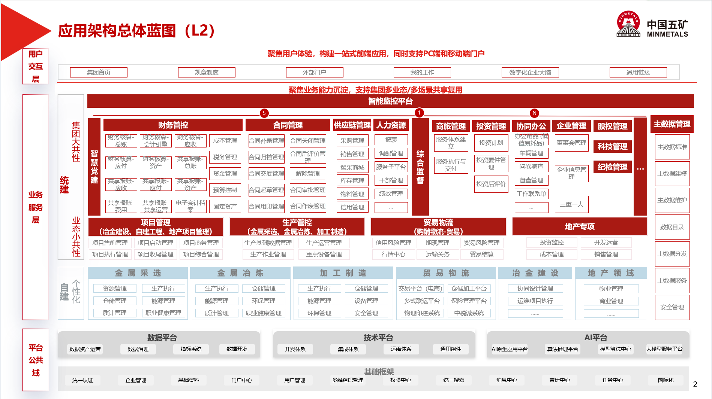
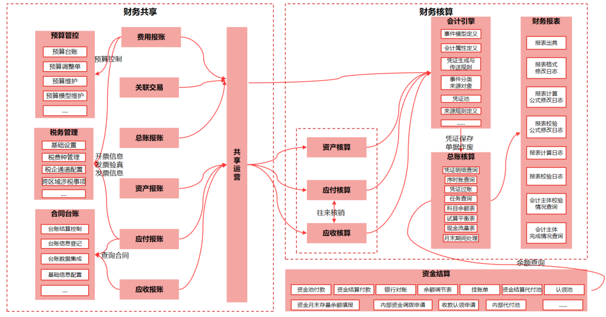
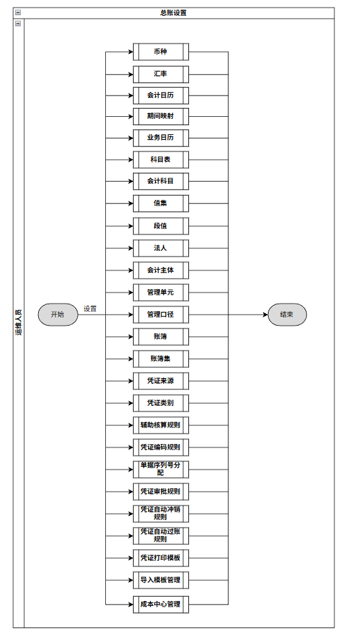
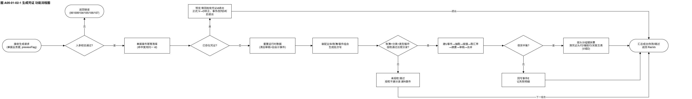
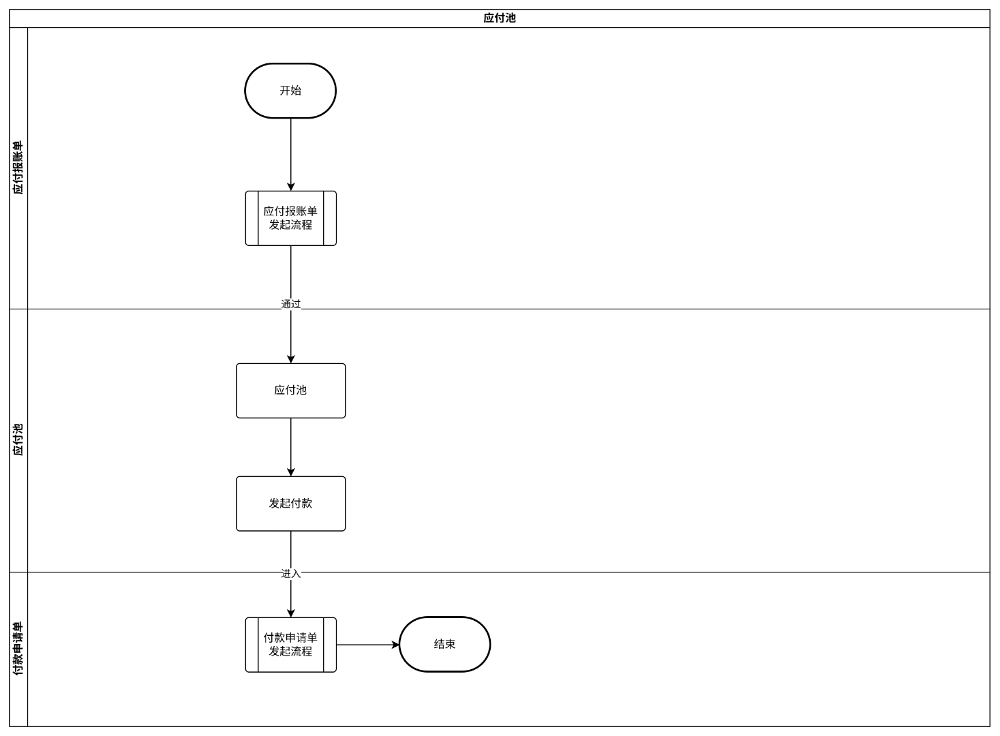
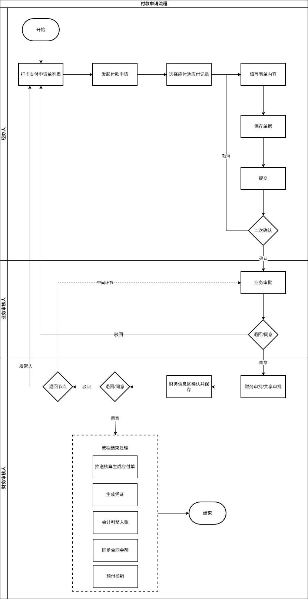

统建项目（财务管控）新人上岗手册
目标读者：刚进入五矿集团统建系统建设项目—财务管控的前端开发、后端开发、实施顾问、测试同学。 目标：读完这一套，你能回答 —— 「这个平台在做什么」「我负责的模块在哪一层」「一张单据怎么变成账和钱」「哪些配置必须先做」「踩过哪些坑」「哪些话我还不该乱说」。
这套文档是怎么来的
全部内容来自五矿统建知识库（知微 · 财务管控库）：26 组问题、约 13.1 万字原始答案，含引用来源（原件标题 + 分块/页码）与 12 张原文截图。原文保存在 .ekko-tmp/kb/kb-answers/，可逐条追溯。
知识库答不上、或文档之间自相矛盾的地方，我们没有编造，统一标成「⚠️ 待核实」，并在 16 线下索取清单 里写明该找谁要什么。
阅读路径
| 你是 | 建议顺序 | 大概耗时 |
|---|---|---|
| 前端开发 | 01 平台全景 → 02 架构清单 → 03 数据流 → 10 前端接入 → 09 上手路径 | 3 小时 |
| 后端 / 二次开发 | 02 架构清单 → 13 单据链路 → 15 数据模型 → 14 接口清单 → 03 数据流 | 4 小时 |
| 实施顾问 | 01 平台全景 → 11 配置作战手册 → 05 配置注意事项 → 12 资金与预算 → 16 索取清单 | 5 小时 |
| 测试 / 业务关键用户 | 03 数据流 → 06 设计理念 → 08 名词表 → 07 踩坑 → 13 业务规则 | 3 小时 |
| 只想先看懂业务 | 03 数据流 → 06 设计理念 → 08 名词表 | 1.5 小时 |
如果你是第二天就要开始配环境 / 跟着上线的那种，别从头读：直接 11 实施配置作战手册，按九层顺序配，每层用报错对照表自检。
目录
认知层：先建立地图
| # | 文档 | 一句话说明 |
|---|---|---|
| 01 | 平台全景与建设范围 | 建什么、目标是什么、8 套环境、技术上怎么分层 |
| 02 | 应用架构与系统清单 | L1→L5 分层、九大业务域、每个系统解决什么问题 |
| 03 | 业务数据流与系统定位 | 五条主线：单据流、凭证流、主数据流、资金流、报表流 |
| 06 | 设计理念与池化模型 | 为什么长成这样：单据化、池化、规则化、预算前置 |
| 08 | 财务名词表 | 60+ 个名词，一句话解释 |
实施层：动手要用的
| # | 文档 | 一句话说明 |
|---|---|---|
| 11 | 实施配置作战手册 | 空租户到第一张凭证的九层最小配置 + 漏配报错对照表 |
| 05 | 配置与实施注意事项 | 新增模块 10 步、初始化五层依赖、会计引擎、权限五层 |
| 12 | 资金计划与预算控制 | 预占/实占/释放/追加，三档控制，预算与计划谁先控 |
| 15 | 数据模型与报表取数 | 四层表、命名规则、精度、KMJE 公式、合并抵销现状 |
业务与集成层
| # | 文档 | 一句话说明 |
|---|---|---|
| 13 | 单据链路与业务规则 | 应付全链路 7 环、5 个异步点、三单匹配、共享派单 |
| 14 | 接口清单与集成 | 合同/司库/影像/税务/档案/主数据，幂等与补偿 |
| 10 | 前端接入与工程规范 | 门户/微前端接入、共享依赖 304 坑、接口三类鉴权 |
人与成长
| # | 文档 | 一句话说明 |
|---|---|---|
| 04 | 人员与组织分工 | 谁负责哪个应用、角色职责、需求与缺陷怎么流转 |
| 09 | 新人 30 天上手路径 | 按周拆解的必读、必会、自查清单、答辩六问 |
| 07 | 常见问题与踩坑 | 配置/数据/接口/性能四大类高频坑 |
| 16 | 线下索取清单 | 知识库补不上的，找谁要什么（含可直接发出的索取话术） |
三条最容易走错的路（先记住）
- 以为「单据状态」就是「审批状态」 —— 单据状态 4 态（草稿/审批中/已完成/已作废），审批状态 10~11 态，两套枚举，前端必须分开映射。
- 以为「凭证生成」是保存后就有的 —— 凭证生成节点常挂在审批节点上，且规则没配时只弹「当前单据类型未配置凭证生成规则」，不生成任何东西。配置顺序错了会一路空跑。
- 以为某个接口/字段的语义是唯一确定的 —— 金额精度、(26,6)、(18,2)、(36,10) 三套并存；「允差」字段有两套官方定义。凡遇到这类冲突，先查 16 索取清单，别自己拍。
维护方式
- 补问知识库：
python .ekko-tmp/kb/kb_run.py f（a平台全景b组织人员c配置实施d设计理念e前端接入f实施下钻）。问答按问题文本断点续跑，同一问题不会重复花时间。 - 改完 md 重新打包：
python docs/build_docs_html.py→ 生成同目录index.html（单文件，双击即看）。 - 新增一篇：在
docs/build_docs_html.py的DOCS列表里加一行（文件名, 导航标题, 分组），再在本文档目录表补一行。 - 内容有疑问：先查
.ekko-tmp/kb/kb-answers/*.json的原始答案与引用，再看该篇末尾「待确认项」。
01 平台全景与建设范围
1 这是什么项目
五矿集团统建系统建设项目—财务管控平台：全集团统一、国产化的财务管控平台。
| 维度 | 内容 |
|---|---|
| 定位 | 落实国资委穿透式监管要求，构建「上下贯通、实时在线、自动预警」的智能化穿透式监管体系 |
| 目标 | 标准统一、流程协同、数据贯通、管控有效 |
| 手段 | 推动全集团财务管控系统大集中，以「财务一体化」支撑「业务一体化」 |
| 业务总纲 | 打通核算报告、成本管会、资金管理、预算控制、投资资产、商旅费用六大业财闭环 |
| 应用分组 | 财务核算应用组 / 财务管理应用组 / 财务报账应用组 |
下属单位解决方案里给了四条落地原则，看项目文档时可以拿来对照：
- 集团统建优先 —— 最大化复用标准功能，本地化以配置为主，不轻易改代码；
- 业财一体贯通 —— 业务单据驱动财务凭证，账实相符、业财一致；
- 数据标准统一 —— 物料、客商、科目、组织等主数据同源；
- 安全合规可控 —— 等保 2.0、信创、细粒度权限与审计日志。

上图是集团级应用蓝图：财务管控只是「集团大共性」里的一个域，右边与合同、供应链、商旅、投资、协同办公等域横向打通，下方由数据平台、技术平台、AI 平台和基础框架（统一认证、权限中心、消息中心等）托底。记住这张图的位置关系，比记住几十个模块名有用得多。
2 技术架构分层
技术架构在详细设计文档中统一按六层组织：
| 层 | 内容 |
|---|---|
| 展现层 | Web 端、移动应用（Vue3 + Pinia + Axios + Element-Plus + 五矿前端组件） |
| 网关层 | SLB、SpringCloud Gateway |
| 业务服务层 | 主数据、预算模型、控制策略、预算执行分析等业务服务 |
| 基础服务层 | 认证、消息、任务、缓存、工作流、规则引擎、接口集成 |
| 数据访问层 | Mybatis、JDBC |
| 基础设施层 | OceanBase、Redis、东方通消息；信创环境 |
DevOps 链路：Git → Maven → Jenkins → Docker → Kubernetes，部署由波塞冬 Poseidon 平台承载。

⚠️ 上图取自《预算控制》模块的 L3 详细设计文档，属模块级技术架构表达。平台级「技术平台应用架构蓝图」在知识库中只检索到汇报材料的目录条目，正文未取到 —— 如果需要向平台架构组确认统一技术总纲，指这个缺口。
平台公共能力由基础服务统一提供，业务应用不重复建设：SSO、权限服务、用户/账号/组织服务、工作流管理、任务调度、规则引擎、接口集成。
3 环境矩阵（最容易搞混的部分）
| 环境 | 门户地址 | 用途 |
|---|---|---|
| DEV 开发 | https://dsep-portal-dev.minmetals.com.cn | 开发自测 |
| TEST 测试 | https://dsep-portal-test.minmetals.com.cn（登录页 /portal/signin，用「4a 账号」） | 系统测试、集成测试、回归 |
| IMPL 实施定制 | https://dsep-portal-impl.minmetals.com.cn | 按客户需求做配置、扩展、迁移准备 |
| DEMO（UAT） | https://dsep-portal-demo.minmetals.com.cn | 财务关键用户验收 |
| STG 准生产 | https://dsep-portal-stg.minmetals.com.cn | 性能测试 |
| NEW-STG 新准生产 | https://dsep-portal-new-stg.minmetals.com.cn | 上线前最终验证 |
| PROTO 实施基线 | https://dsep-portal-proto.minmetals.com.cn | 实施基线环境 |
| PROD 生产 | https://portal.minmetals.com.cn | 生产 |
| DevOps | https://poseidon.minmetals.com.cn（需切到对应环境） | 部署与运维 |
纪律三条：
- 不要把 UAT 当联调环境，UAT 是给财务关键用户验收的；
- 测试环境统一用 4a 账号登录；
- 生产不得手工发布，必须走 Poseidon 流水线。
⚠️ PROTO（实施基线）与 IMPL（实施定制）的职责边界在文档中表述接近，以项目环境管理表为准。
4 部署形态与门户接入
- 统一门户是唯一入口：所有环境都是「五矿个人门户 + 环境后缀」，应用不对外暴露独立域名。
- 容器化 + 平台化发布：Poseidon 配置部署 YAML、探针；Docker/K8s 承载容器编排。
- 前端走 nginx 网关：静态资源 + nginx 反向代理接入，与后端服务解耦（部署说明书里有专门的「前端配置—nginx-gateway.conf」章节）。
- 门户侧四类注册（缺一个就出问题）：
- 能力中心 → 应用管理（应用编号、名称、负责人、服务地址）
- 统一集成平台 → API 注册管理
- 应用管理 → 编号管理中心
- 能力中心 → 消息中心 / 文件中心
- 数据访问按环境分租户：开发库是 UAT 复制库、集中在
data_migration租户，一个账号可访问全部 L2 业务库；正式环境各业务库分布在不同租户（约 10 个），需逐租户开账号。示例实例：开发10.202.160.141:9100，正式10.202.160.141:9000。
5 前端开发必须先知道的平台约束
| # | 约束 | 说明 |
|---|---|---|
| 1 | 技术栈基线 | Node 20.x、Vue 3.5.18、TS 5.x 为硬性基线；Vite 6.x、Vitest、ESLint 9.10.0、Scss（可选 UnoCSS）、Pinia 3.0.3 |
| 2 | 微前端方案存在口径冲突 | 多数 L3 文档写 QianKun；共享运营、应付核算文档写 wujie 1.x（标注「暂定」）。接入前必须与平台架构组确认最终主应用方案 |
| 3 | 不要自建登录/权限/组织体系 | 认证、权限、用户、组织、工作流、规则引擎全部由平台基础服务提供，业务前端通过 SSO 与平台权限模型取身份和菜单 |
| 4 | 先注册、再联调 | 应用要在门户能力中心注册，接口要在统一集成平台注册；同时接入编号中心/消息中心/文件中心，否则编码、消息、附件能力直接缺失 |
| 5 | 环境纪律 | 见上一节；生产发布只能走流水线 |
| 6 | 历史文档有技术栈代差 | 个别模块（如预算控制_控制引擎）L3 文档仍是 Vue Router 3.0.3 / Vuex / Vue CLI / Webpack 4 / Vant，属 Vue2 遗留口径，不能当新工程脚手架参考 |
6 本篇的证据缺口
- 未取到「平台级统一技术架构总纲」正文，六层架构来自模块级 L3 文档 + 共享运营应用架构图。
- UI 组件库清单、编码规范/分支模型、包管理与脚手架模板、门户菜单权限模型细则未检索到明确条款，需向平台架构组索取《平台前端接入规范》。
- 建议向平台管理员索取两样东西：Poseidon 应用清单（核对工程名/负责人）与门户能力中心注册目录（核对 API 与编号中心接入状态）。
02 应用架构与系统清单
1 先记住分层：L1 → L5
架构表（3A 架构表）把整个项目按五级铺开，这是所有讨论的共同语言：
| 层级 | 含义 | 例子 |
|---|---|---|
| L1 应用域 | 集团级业务域 | 财务管控 |
| L2 应用组 | 域内分组 | 财务核算应用组、财务管理应用组、财务报账应用组 |
| L3 应用 | 一个可独立交付的系统 | 总账管理、应付报账、资金结算、预算控制 |
| L4 应用模块 | 系统内的功能模块 | 总账管理下的「凭证管理」「科目余额表」 |
| L5 功能 | 具体菜单/按钮级功能 | 「凭证管理」下的「新增凭证」「凭证打印」 |
新人最常见的错位：把 L4 模块当成一个系统。判断依据很朴素 —— 有独立菜单树、独立权限项、独立应用编号的才是一个 L3。
2 两套 L2 口径并存（动手汇总前务必确认）
| 口径 | L2 怎么切 | 出处 |
|---|---|---|
| 蓝图口径 | 财务核算应用组 / 财务管理应用组 / 财务报账应用组（三大组） | 《平台级应用架构蓝图汇报材料》第 28 页 |
| 3A 表口径 | 财务核算、财务核算-总账、共享报账、预算管理、资金管理 等 | 各分册《3A架构表-应用架构L1-L5》行级数据 |
两套不是同一套切分。做汇总表、排负责人、写汇报材料时，必须先声明以哪套为准，否则同一模块会被算两次。
3 九大业务域的系统清单（新人版速查）
| 业务域 | 子系统 / 模块 | 一句话定位 |
|---|---|---|
| 共享报账 | 费用报账 | 借款、差旅、业务招待、押金保证金等费用类事前申请与报销的统一入口，连接商旅、税务、资金、总账 |
| 应付报账 | 对公应付类报账：付款申请、押金保证金、预提/计提、商旅对公费用报账 | |
| 应收报账 | 收入类报账：收款认领、暂估收入、通用销售、工程对上计价、收入成本结转，触发开票 | |
| 资产报账 | 资产新增、验收、调拨、处置等资产变动事项的报账入口 | |
| 总账报账 | 承接不经过业务单据、需直接入账的总账业务报账单与财务综合工单 | |
| 关联交易报账 | 集团内部关联交易的报账单、对账与关联交易报表 | |
| 共享报账基础应用 | 业务类型、单据字典等公共字典，供各类报账统一调用 | |
| 报账核销引擎（数据分类中心） | 支撑应收应付核销匹配：数据分类匹配、分类查询与手工更新 | |
| 共享运营 | 共享运营 | 财务共享中心运作中枢：共享机构、工作组、岗位、流程、任务分配规则与任务池 |
| 财务核算 | 会计引擎 | 按事件模型与凭证分录规则把业务单据自动转成会计凭证并传总账 —— 业财转换核心 |
| 总账管理 | 会计主体、科目、账簿、币种汇率等基础设置 + 凭证、期末、月结、报表查询，形成「设置—业务—期末—查询—月结」闭环 | |
| 应付核算 | 围绕应付单、付款单、核销单完成应付确认、核销、账龄、预付坏账及与总账对账 | |
| 应收核算 | 应收单据确认、往来核销与应收余额查询，与应收报账、发票管理协同 | |
| 资产核算 | 资产卡片、资产变动、折旧、盘点与资产报表，承接资产报账结果 | |
| 合同台账 | 登记合同台账并控制结算，向应付、应收、资金计划提供合同依据 | |
| 财务报告 / 报表管理 | 报表格式、计算公式与校验规则配置，出具财务报表、维护合并报表规则 | |
| 成本管理 | 成本管理 | 成本核算、生产成本、库存计价与成本分析，承载金属采选/冶炼/冶金建设/商管物业等业态特色 |
| 资金管理 | 资金计划 | 计划编制、审批、调整与额度控制，为报账提供额度校验 |
| 资金结算 | 付款结算、资金池付款、银行对账、余额调节表、代付池、认领池等收付执行 | |
| 付款管理 / 收款管理 | 结算池、委托付款、司库指令监听完成对外付款；认领池完成收款归集 | |
| 账户管理 | 实体账户与内部账户、账户开销变及余额明细对账，是资金可视化基础 | |
| 资金池 | 资金调拨、下拨、内部存款与内部利息结算，实现集团资金集中 | |
| 票据管理 | 应付/应收票据开票、背书、质押、贴现及票据台账 | |
| 供应链金融 | 供应链票据的开票、解付、转让、到期收款 | |
| 发布管理 | 银行流水发布与票据签收，为认领与结算提供来款依据 | |
| 预算管控 | 预算管控 / 预算控制 | 预算组织—科目—维度基础配置、预算类别与模型、控制策略与规则、预算承接，以及业务发生时的预算校验/占用/释放/实际数回写 |
| 税务与发票 | 税务管理 | 税费种管理、税企通道配置、跨区域涉税事项报告 |
| 发票管理 | 销项/进项发票统一管理，支持红冲、查验、归集 | |
| 发票开具（蓝/红字申请） | 由应收报账推动开票申请并回传结果，衔接发票管理与计税 | |
| 财务资产 | 财务资产管理 | 资产全生命周期核算与管理：卡片、变动、折旧、盘点、资产报表 |
| 平台横向 | 会计主体、基础配置、值集管理、科目管理、科目映射规则、辅助核算映射规则、组织与人员关系、自定义报表设置 | 各域共用的配置底座，统一核算与管理口径 |
两个闭环的口径说明
- 商旅费用：由费用报账承接 —— 对接商旅平台取申请与订单信息，在应付报账形成「商旅对公费用报账单」闭环。
- 投资资产：资产侧由资产报账与资产核算落地；但「投资管理」在集团层面属业务统建系统（如投资管理系统），财务管控应用清单里未单列，其衔接边界 ⚠️ 待核实。
4 按应用组看（蓝图口径）
- 财务报账应用组：总账报账、关联交易管理、总账报账业务与查询
- 财务管理应用组：预算控制、资金计划、共享运营、管控配置、服务与流程配置、审核规则配置
- 财务核算应用组：财务报告、总账管理、应付核算、会计主体、科目管理、期末管理、科目映射与辅助核算映射规则、自定义报表
5 ⚠️ 关于「完整 L1–L5 总表」
知识库中不存在一张全量 L1–L5 总表，原因是材料本身分两类：
- 蓝图级：第 28 页只给 L1→L2→L3 框架与模块名，抽取后是扁平文本流，无法确定层级归属；
- 行级：各分册 3A 表逐行给出 L1/L2/L3/L4/L5，但每份只覆盖自己那块，版本号还不同（V1.0/V1.1/V1.2/V1.3/V2.1）。
所以本手册只给到「已确证层级 + 可确认名称」的混合清单。要拿到全量表，正确做法是：向各应用负责人索取本应用最新的 3A 表分册，按 V2.x 版本对齐后合并，而不是让某个系统去汇总。
03 业务数据流与系统定位
这一篇回答新人最痛的问题：几十个模块，数据到底怎么流？
1 先建立框架：财务管控域拆成「四层」
看起来杂乱，其实所有模块都落在这四层上，每层只做一件事：
| 层级 | 干什么 | 典型模块 | 判断标准（开发视角） |
|---|---|---|---|
| ① 业务/报账层 | 把「发生的事情」变成内部可审批的单据 | 费用报账、应付报账、应收报账、资产报账、总账报账、关联交易 | 有「报账单」页面、有审批流、有附件影像 |
| ② 处理/池层 | 单据暂存、核销、配对、待付 | 预付池、应付池、支付申请池、凭证池、共享运营派工 | 有「池 / 批次 / 认领」概念，状态会长期停留 |
| ③ 核算层 | 单据变成账（凭证 → 余额） | 应付核算、应收核算、资产核算、会计引擎、总账管理 | 有会计主体 / 账簿 / 期间 / 科目字段 |
| ④ 报告与资金层 | 出报表、真金白银收付 | 报表、往来报表、资金管理/资金池、资金结算、司库 | 对接银行、有交易流水 |
系统骨架是：财务共享 → 共享运营 → 财务核算 → 资金结算 → 财务报表。报账在最前发起，会计引擎/核算/总账在中间做账，资金结算和报表在最后收口。

左侧各类报账（费用/应付/应收/资产/总账/关联交易）+ 预算、税务、合同台账；中间共享运营做派工；右上财务核算（会计引擎、三套核算、总账核算）；右下资金结算；最右报表出具。
2 五条主线（只需要记住这五条）
主线 1：单据流（业务 → 报账 → 池）
前端业务系统（供应链、合同、项目、商旅、招投标、期现）把采购订单匹配单、合同台账、差旅结算、扣退款等信息推给应付报账；报账侧生成应付报账单/付款申请单/押金保证金单，进入预付池、应付池核销与记录，最终汇聚到支付申请池生成支付记账单。应收侧同理：收款认领 → 各类应收报账单（暂估收入、通用销售、工程对上计价）→ 开票申请。
开发要抓的点：一条业务事实在系统里可能同时存在「外部单据、报账单、池记录、结算单」四份数据，通过单据编号与业务键关联，而不是一张表走到底。
主线 2：凭证流（报账单 → 会计引擎 → 凭证池 → 总账）
整个项目最关键、也最容易出错的链路：
- 应收/应付/资产/费用报账等子模块的业务单据，通过会计引擎生成凭证；
- 凭证先落凭证池：单据生成会计事件时即向凭证池写记录（支持同步调用，也支持消息队列异步写入）；
- 凭证池内做草稿(D) → 正式(F) 状态转正，再「传送总账」；
- 凭证池传输到总账，总账过账后生成凭证编号，并把凭证编号回传到会计引擎的凭证上。
完整状态机：子模块单据生成会计事件 → 初始化凭证池记录 → 创建凭证（草稿/正式）→ 传送总账 → 过账 → 需要时冲销生成新凭证，全程带成功/失败校验与重试。
接口层面（generate-formal）的必填项很能说明边界：模块编码、会计主体编码、业务单据类型编码、会计日期、流程方向（F 正向 / R 逆向）、是否传总账（Y/N）；逆向时还必须填被冲销单据三件套。
会计引擎的设计定位值得前端记住一句：业务数据不变，规则独立配置迭代。所以「科目映射 / 辅助核算映射 / 校验规则」大多是配置项，不是写死的逻辑。
主线 3：主数据与基础设置流（谁在记账、按什么规则记）
- 币种、客商、合同、项目、银行账户、物料从基础资料同步获取，全模块共用一套；
- 反过来，科目表、会计科目、汇率以总账为核心管控端，先同步至基础资料，再由基础资料下发各模块；
- 法人、会计主体由组织管理统一搭建，总账通过集成获取主数据。
一句话记法：「身份类」主数据往外发，「规则类」配置从总账往外发。
主线 4：资金流（要付钱的那条线）
业务报账（费用/应付/应收/关联交易）提交对公付款/对私报销申请 → 资金计划校验 → 进入资金管理（账户管理、流水清分、资金池、票据、付款管理、资金计划）→ 与司库系统交互做银行转账、票据开立/背书/签收、账户开销变 → 结果回流（付款结果、票据信息、交易流水、账户余额/明细）回到报账与核算侧。合同台账提供合同与台账结算控制，预算管控提供额度校验。
关键是结果回流：付款失败、部分支付、票据背书被拒，都会改变报账单据与池的状态 —— 前端不能只在提交时联动。
主线 5：报表流（注意：它和凭证流不是一条路）
- 核算出数：总账把账簿、会计主体、期间、科目余额/辅助余额提供给报表管理，报表系统直接从总账取数，做到「数据同源」；
- 管理报表出数：往来报表管理不走凭证流，走数据中台：①源系统取数 → ②中间层数据处理 → ③标准化报表生成 → ④手工数据调整 → ⑤融合数据校验 → ⑥报送审批 → ⑦输出查询。
判断口径：「核算类」看会计引擎和凭证，「报表/分析类」看数据中台和取数规则。
主线汇总（依据上述证据整理，非原图）
3 叠一张「实管道图」：以应付报账为例

这张图几乎覆盖所有典型要素：左侧外部业务系统（商旅、用工、成本管理、供应链、招投标、项目管理、期现一体、合同系统、主数据）；中部五类报账业务与三个池（预付池、应付池、支付申请池），输出支付记账单；右侧对接应付核算、总账管理、会计引擎、资金管理、税务管理；底部与应收核算、预算管控、应收报账、资产管理、费用管理双向交互。
看懂这一张，其它报账模块（费用、应收、资产、总账报账）都是同一套骨架的变体。
读图技巧
这类产品图的图例有语义：本功能 / 财务管控域内数据交互 / 跨财务管控域（跨域）数据交互 / 第三方系统集成，箭头颜色和线型不同。同一张图里「域内」和「跨域」的接口，改造工作量完全不同 —— 先看图例再评估工作量。
4 各系统定位速查
| 系统 / 模块 | 一句话定位 | 上游给什么 | 下游拿什么 |
|---|---|---|---|
| 主数据 / 基础资料 | 全域「身份字典」 | 组织、客商、合同、项目、银行账户、物料 | 全模块共用 |
| 总账设置 | 「坐标系 + 规则」 | 科目表、会计科目、币种/汇率、账簿、会计日历、辅助核算规则、凭证模板 | 核算、报账、资金按它建账 |
| 报账层（费用/应付/应收/资产/总账报账） | 业务转财务的「入口」 | 外部单据、发票、合同 | 池、核算、会计引擎 |
| 报账池 / 支付申请池 | 未结清债权的「台账」 | 报账单、核销 | 付款申请、核算 |
| 核算层（应付/应收/资产核算） | 单据记账的末端 | 报账单数据、单据状态 | 会计引擎、总账 |
| 会计引擎 + 凭证池 | 「翻译官」+ 凭证暂存站 | 业务事件、来源规则 | 总账 |
| 总账管理 | 账的主库（凭证、余额、期间） | 凭证池推送 | 报表、对账 |
| 资金管理 / 结算 | 「钱」的出口 | 支付申请、资金计划 | 银行/司库、报账状态回写 |
| 预算管控 | 提交即校验的「闸门」 | 预算模型、控制策略 | 各业务系统的额度占用 |
| 报表 / 往来报表 | 出数与报送 | 总账余额、数据中台 | 监管报送、管理分析 |
5 一句话总结本篇
业务事实 → 报账单 → 池 → 核算 → 凭证 → 总账 → 报表；钱则走「支付申请池 → 资金管理 → 司库 → 结果回流」。 两条链路在「凭证池 / 支付记账单」处交汇，任何设计讨论都先问一句「这事属于哪条链路」。
04 人员与组织分工
⚠️ 先说结论：知识库里没有一份正式的项目组织架构 / 人员通讯录 / RACI 表。下面把「文档能证明的」「能间接推断的」「完全查不到的」分开列，宁可空着也不编人名。
1 有据可查：3A 架构表的「负责人」
《3A架构表-应用架构L1-L5》只有 「总账 & 关联交易」这一系列（V2.1、V1.0）带「负责人」列，其余分册用的是「PRD / 技术设计 / 开发进度 / 功能测试结果 / 未关闭缺陷数」进度列，填的是产品经理、开发、测试角色，没有负责人列。
所以能落地的负责人只有这一段应用链：
| 应用组（L2） | 应用（L3） | 应用模块（L4）范围 | 负责人 |
|---|---|---|---|
| 财务核算-总账 | 总账设置 | 币种、汇率、单据序列号分配、导入模板管理、辅助核算规则、会计科目、科目表、凭证编码/打印/审批/自动冲销/自动过账规则、凭证来源、凭证类别、会计日历、期间映射、业务日历、账簿、账簿集、段值、值集、法人、管理单元、管理口径、会计主体 | 刘福 |
| 财务核算-总账 | 总账管理 | 凭证管理、经常性凭证、辅助明细余额表、辅助余额表、科目明细余额表、科目余额表、凭证明细查询、试算平衡表、现金流量表、序时账查询、报告币折算、外币重估、账簿折算 | 刘福 |
| 财务核算-总账 | 结账管理 | 关账工作台、结账任务管理、年结处理、期间管理 | 刘福 |
| 财务核算-总账 | 报表管理 | 报表自定义管理（定义、计算、校验、封存、完成、审核、打印、数据删除、手工结转、查询、编辑、穿透、日志） | 葛琦 |
| 共享报账-总账 | 总账报账 | 财务综合工单、业务类型、总账凭证报账单、总账业务报账单、报账明细汇总表、单据汇总表 | 马玉松 |
| 共享报账-总账 | 关联交易 | 关联方管理（主数据申请单查询/新增/编辑/查看、主数据查询、关联方详细定义、主数据变更查询） | 高玉磊 |
按人汇总：
- 刘福 —— 总账基础配置 + 总账业务查询 + 结账管理（V1.0 版另含科目管理、组织管理）
- 葛琦 —— 报表管理 / 资产负债表等具体报表
- 马玉松 —— 总账报账整条应用
- 高玉磊 —— 关联交易 / 关联方管理
应用级负责人（门户能力中心登记口径）
| 应用 | 应用编号 | 应用负责人 |
|---|---|---|
| 应收报账 | app-minmetals-fm-fis-ar | 赵伟 |
| 应付报账 | app-minmetals-fm-fis-ap | 王帅 |
注意：这是应用级负责人（按后端app-编号登记），文档没有单列「前端负责人」。同一应用的fe-工程与后端共用业务归属是合理推断，不是文档明示。 Poseidon 部署页上出现的姓名（如「田蜜」「乔海平」）是操作人，不能当负责人证据。
测试阶段的分工人员（单模块口径）
《WKKY_财务应收_单模块测试_用例测试步骤》按「小组顾问 / 关键用户 / IT 支持」列了人：
| 模块 | 小组顾问 | 关键用户 | IT 支持 |
|---|---|---|---|
| 合同管理 | 谭庆超 | — | — |
| 人力资源 | 毛艳梅 | — | — |
| 协同办公 | 范祺琪、章如静 | 焦俏红、赵鹏 | 高尚 |
| 生产管控 | 周荣海、王素莎 | — | — |
这是测试阶段单模块分工，不代表项目组任命；「IT 支持」≠ 开发负责人。
2 角色职责（文档明文定义）
| 角色 | 职责（文档表述） |
|---|---|
| 实施顾问 | 财务信息化项目的核心执行者与推动者，兼具财务业务知识、IT 认知与项目管理能力；负责实施全流程 —— 系统部署、配置、测试、上线、用户培训，使系统功能与企业实际业务场景适配 |
| 系统管理员 | 财务各模块（总账、应收应付、固定资产、供应链、费用报销、预算、合并报表等）的系统配置、基础档案维护、权限管理、流程配置、版本运维、问题处理与数据安全管控，不做日常账务 |
| 运维人员 | 衔接财务业务与 IT，负责系统全生命周期运维，保障稳定安全高效运行，解决技术与业务适配问题 |
| 共享管理员 | 共享运营模块的系统配置与问题处理，同样不做日常账务 |
| 业务关键用户 | 测试组织中独立角色，与「小组顾问」「IT 支持」并列，参与单模块场景用例的确认与执行 |
| BRD 编制方 | 《业务需求说明书》作者为「集团公司统建系统建设项目财务专班」（V2.0 征求意见稿） |
3 前后端分工：文档里没有，只有痕迹
- 3A 架构表的研发进度列按填报角色拆分：PRD / 技术设计由产品经理填写，开发进度由开发人员填写，功能测试结果与未关闭缺陷数由测试人员填写 —— 只区分「开发人员」，未细分前后端。
- 概要设计（BRS）对每个 L4 功能按「功能实现、接口设计、后端插件设计、前端设计」四段描述 —— 说明设计工作事实上按接口/插件层与前端控件层分头编写。
由此可用的约定只有一条：开发者按 BRS 的「前端设计 / 后端插件设计」章节认领功能点。
4 需求 → 缺陷 → 发布 的流转
依据《CWGL_发布管理_PRD L4 流水发布池评审版》与《CWGL_电子会计档案PRD》流程页整理：
- 发布节点：需求提出 → 需求分析 → 技术实现 → 代码评审 → 测试 → 上线；含需求录入、需求分发中心（审核）、工作量评估、开发排期、代码评审、代码提交、测试、合并主分支、发布、归档。
- 角色设置：项目组、产品经理、项目经理、技术总监、测试工程师。
- 缺陷台账：3A 架构表逐功能点设「功能测试结果（通过/不通过）」与「未关闭缺陷数」，由测试人员维护；测试用例表设「维护人 / 冒烟用例 / 优先级 P1–P4」。
- 线上问题走需求变更分支，不是缺陷分支。
5 前端工程与归属（找工作找谁看这里）
文档给出的是 Poseidon 应用名，不一定等于 Git 仓库名。命名规律：fe-= 前端（node），app-= 后端（java maven springboot）。
| 前端工程 | 对应业务系统 | 说明 |
|---|---|---|
fe-minmetals-fm-fis-fs | 共享运营 | node 前端 |
fe-minmetals-fm-fis-rt | 关联交易 | node 前端 |
fe-minmetals-fm-fis-ar | 应收报账 | 与 app-minmetals-fm-fis-ar 成对 |
fe-minmetals-fm-fia-ara | 应收核算（应用计算引擎） | 构建机 node:12.21.0、镜像 nginx:1.19.8、1 核 1G |
fe-minmetals-fm-fia-apa | 应付核算（应用计算引擎） | 前端镜像，nginx 配置 minmetals-fm-fia-apa |
fe-minmetals-gu-fin-asset | 资产核算 | 「资产核算-前端镜像」 |
fe-minmetals-business-base | 采购管理（跨域示例） | 「五矿前端微开」 |
前缀分组：fm-fis-* = 财务报账/共享报账域（fs 共享运营、ar 应收报账、ap 应付报账、fa 资产报账、rt 关联交易、base 财务报账基础应用）；fm-fia-* = 应用计算引擎产品线（ara 应收核算、apa 应付核算、base 基础应用）；gu-fin-asset = 资产核算（独立命名）。
- Git 归属：唯一给出地址的是应收核算前端
https://git.cisdigital.cn/wk-financial-control/ace/fe/fe-minmetals-fm-fia-ara.git—— 前端工程统一收在wk-financial-control下的ace/fe组。 - 产品线：文档里划分前端负责团队的唯一组织维度是产品线 —— 财务 / 应用计算引擎。
关于 fia-base / fia-sla
fia-base确实存在，但只以「被调用的后端基础服务」出现（应付核算application.yml里的 http-exchange 客户端）；它与「财务报账基础应用」app-minmetals-fm-fis-base不是同一个东西。前端工程未见到。fia-sla未直接检索到同名工程，只有配置键与消息主题sla-voucher-wb-rocketmq、消费组finance_sla_vou_wb_apa_group、topicfinance_sla_vou_wb（凭证回写场景），更像「凭证回写服务」的中间件配置。⚠️ 需向平台管理员索取 Poseidon 应用清单核对。
6 完全查不到的（别浪费时间翻文档）
- 项目组织架构、项目经理、各组组长名单、各角色对接人通讯录；
- 前后端开发团队编制与人员归属、前端团队花名册；
- 版本节奏（迭代周期、灰度策略、发布窗口）、发布审批与回滚责任人；
- 缺陷分级标准、处理时限（SLA）与升级路径；
- 公共组件库与脚手架模板的仓库、版本与维护方。
这五项建议直接找项目经理 / 平台架构组要，知识库补不齐。
05 配置与实施注意事项
这一篇是实施顾问的主战场，也是前端最容易「莫名其妙提测不过」的根因所在。
1 通用原则（背下来）
- 先配没有内部依赖的基础配置，再配带前置依赖的业务规则、账户、风控、计划类配置。
- 配置手册里每条配置都有六列：配置名称 / 配置类型 / 关联业务对象 / 配置要求（必选·可选）/ 依赖应用 / 依赖配置。「依赖配置」列就是上线排序的直接依据。
- 系统预置的参考数据（币种、汇率类型、关联方类型等）实施人员不需要新建，只需核验完整性；但实施账号本身必须先由系统管理员开通功能权限 + 匹配数据范围的数据权限。
2 新增一个业务模块：从 0 到上线 10 步
| 顺序 | 事项 | 关键入口 | 主要产出 |
|---|---|---|---|
| 0 | 应用服务在基础平台开放 | 系统管理 > 应用管理 > 服务管理 > 【功能管理】 | 功能菜单树、操作权限标识、业务模型关联 |
| 1 | 组织（组织机构 / 公司 / 部门） | 基础平台组织机构 | 组织维度可用（后续会计主体、单据、审批人、数据权限都按它挂） |
| 2 | 会计主体 + 账簿 | 主数据平台、账簿管理 | 会计主体启用、账簿与主体绑定、辅助核算规则 |
| 3 | 单据类型、编号规则、值集 | 基础设置 > 公共设置 / 基础应用 > 单据类型 | 单据类型可查、编号规则生效 |
| 4 | 业务模型（低开） | 应用开发 > 对应服务 > 低开模块 > 【开发】 | 页面/实体模型、操作授权开启、权限项绑定业务操作 |
| 5 | 菜单注册 | 功能管理挂载菜单 | 导航可见 |
| 6 | 角色与权限 | 权限管理 > 角色管理 > 业务角色 | 标准角色 + 业务角色，功能权限 + 数据权限 |
| 7 | 审批流程 | 流程配置 + 绑定系统操作 | 三段式节点 + 通过/退回/拒绝回写 |
| 8 | 参数与业务规则 | 参数配置、业务规则 | 参数项、主表/子表规则 |
| 9 | 测试与上线验证 | 权限与流程回归 | 上线清单 |
各步的关键细节
第 0 步：系统管理 > 应用管理 > 服务管理 找到已开放的应用服务 →【功能管理】：左侧树是「应用开放的功能菜单」，右侧「操作列表」增删改查操作权限标识，右侧「业务模型」维护操作标识关联的业务模型（执行接口时操作到的表）。
第 2 步 会计主体与账簿（财务模块最关键的硬前置）
- 会计主体属主数据管理平台维护的主数据，在会计主体管理菜单完成新增/查看/编辑/启停。
- 新增账簿必填：财务账簿、账簿类型、账簿编码、账簿名称、会计准则、科目表、会计日历、初始期间、本位币币种、使用状态、有效日期范围、备注；账簿与会计主体分别选择并关联，弹窗内「包含会计主体」后执行【启用】。
- 涉及辅助核算还要按「账簿 + 会计主体 + 辅助核算 + 默认值」配辅助核算规则。
- 推荐顺序：会计主体 → 科目表 / 会计日历 / 期间 → 账簿 → 账簿与主体绑定启用 → 辅助核算规则。
第 3 步 单据类型：编号由系统自动生成、全系统唯一、不可重复；名称手工输入并做去空格与重复性校验；编码新增时自动生成、禁止修改，且是关键查询条件。单据编号由「单据类型/业务类型」带出。
第 4 步 业务模型：模型内按页签核对 业务模型 → 页面模型/实体模型 → 特征变量 → 权限控制 → 业务操作 → 业务规则 → 模板配置；「权限控制 → 操作授权」开关必须启用；权限项先搜库中是否已存在，不存在再新增；在「业务操作」里给需要管控的操作（如 new、newentry、saveandnew）绑定权限项。
第 6 步 角色：先建标准角色（经办、业务审批人、财务审批人、系统管理员/运维），再建业务角色（可参考标准角色创建，支持导入导出）；业务角色默认集成标准角色的数据权限与功能权限，建好后点【配置权限】细化。
第 7 步 流程：财务类单据常规是「发起 → 业务审批 → 财务审批」三段式；在流程/业务模型侧「绑定系统操作」，勾选 final_approve（审批通过）、final_return（退回）、final_reject（拒绝）；单据表要具备 process_instance_id、process_id、current_node_code、approval_status、biz_status 承载流程状态；走共享作业的还要在共享中心新增子流程（子流程编码、名称、单据类型、共享中心）。
第 8 步 参数与规则：模块级参数按「参数名、参数名称、参数类型」新增（示例：acctEntityList 会计主体、ledgerList 账簿、legalEntityList 法人、periodCode 期间）；业务规则涉及主表、子表时每张表都要单独配规则 —— 只配主表会导致分录层规则不生效，这是高频漏配点。
3 上线的初始化依赖顺序（五层）
几条原文写明的关键依赖
- 组织数据依赖「主数据中组织数据已按集团标准维护并启用」；申请人依赖平台人员组件；所属部门从组织管理同步。
- 业务类型是依赖最多的节点：依赖组织机构、账簿、部门属性、会计科目、资金计划类型、现金流量项、税收分类编码、单据类型、开票类型、税率。
- 「标准类型」依赖先在【系统管理-基础资料-数据对象】完成数据对象属性管理 + 数据对象定义。
- 会计科目必须挂在科目表下（所属科目表为必填外键）。
- 账户体系是三级链：账户类别（无依赖）→ 账户性质（依赖类别）→ 账户用途（依赖类别+性质）→ 是否推送司库（依赖三者）。
- 资金认领分类前置需要「单据类型、会计科目」；金融机构配置需先有「类别、国家、省份、城市」；管理组织认领规则依赖「管理组织、资金认领分类、款项性质、现金流量项、资金用途」；提醒规则又依赖认领规则。
- 挂账单科目配置需提前维护「管理组织、会计主体、会计科目、现金流量项、资金中心内部户、资金用途、金融机构、客商、银行账户」。
- 页面模型推送是工作流的前置 —— 先配工作流后推页面模型，工作流建不出来。
配错会怎样（后果对照表）
| 配置项 | 配错的表现 | 后果 |
|---|---|---|
| 实施账号数据权限 | 只授权了部分会计主体 | 数据权限控制会计主体、企业会计科目、客商等帮助列表的可选范围，多主体集中配置时查不到、配不全 |
| 功能权限项/数据权限维度未初始化 | 只建角色不初始化权限项 | 按钮权限无承载对象：角色里看不到按钮、菜单能看到但操作不可用 |
| 页面模型推送 vs 工作流 | 顺序颠倒 | 工作流创建/绑定失败，单据提交后无流程实例 |
| 账户类别 → 性质 → 用途 | 跳过类别直接建性质 | 下拉无值，后续「是否推送司库」无从配置 |
| 业务类型 | 单据类型/税率为空 | 业务类型建不出来或性质定义不全，单据无法归类、记账取数异常 |
| 组织数据 | 未按集团标准维护或未启用 | 申请人、所属部门、数据权限全部连带缺失 |
| 会计科目/科目表 | 科目未挂科目表 | 账簿、凭证、科目配置类功能取不到科目 |
| 参考数据 | 只配业务、不核验参考数据 | 币种/汇率类型下拉取值缺失，引用字段为空 |
4 上线检查清单（按阶段勾）
阶段 A 环境与平台（所有模块共用）
- ☐ 目标环境（DEV/TEST/STG/PROD）就绪
- ☐ 中间件（BCS/BES MQ/Kafka/DCS-Z/Datasearch/MinIO/OceanBase）部署可用
- ☐ 应用服务器到中间件 IP/端口网络连通
- ☐ 各环境认证信息（domain/key/secret/账号密码）已获取
- ☐ 能力管理中心、编号中心、消息中心、统一集成平台可访问
- ☐ dev/test 配置导出文件已备好（编号配置用）；参考代码已导入
阶段 B 平台底座
- ☐ 组织数据按集团标准维护并启用
- ☐ 所属部门从组织管理同步完成；平台用户/申请人建立
- ☐ 角色配置完成并分配用户；功能权限项与数据权限维度初始化完成
- ☐ 应用菜单发布；全局业务模型创建；网关路由配置完成
- ☐ 客商、地址（洲/国/省）等公共主数据完成
阶段 C 会计基础
- ☐ 会计主体创建并启用
- ☐ 会计科目按科目表维护（外键回填成功）
- ☐ 币种、汇率类型核验（参考数据，只核验不新建）
- ☐ 账簿创建（含会计准则、科目表、会计日历、初始期间、本位币、有效日期）
- ☐ 账簿与会计主体绑定启用；部门属性维护完成
- ☐ 现金流量项、资金计划类型、税收分类编码、开票类型、税率齐备
阶段 D 单据与字典
- ☐ 单据类型、单据编号配置完成
- ☐ 编码规则验证：新增单据能自动生成不重复编号
- ☐ 业务类型配置完成（依赖项到位后再配）
- ☐ 参考数据/全局下拉核验完整
- ☐ 数据对象（属性管理 → 定义）→ 标准类型；选择器指向正确数据对象
阶段 E 模型与流程
- ☐ 低开模型「操作授权」启用，权限项已绑定业务操作
- ☐ 页面模型推送完成
- ☐ 工作流节点（发起/业务审批/财务审批）与审批人规则正确
- ☐
final_approve / final_return / final_reject已绑定
阶段 F 参数、规则与接口
- ☐ 参数管理配置并生效
- ☐ 业务规则按主表和每张子表分别配置
- ☐ 集成平台 API 检查、MQ 检查完成
- ☐ 需迁移的基础数据脚本已验证
阶段 G 部署后验证（每项都是上线门禁）
- ☐ Kafka 连接正常（流程引擎 bpm、cap 数据中心）
- ☐ ipaas 认证成功（domain 可达、serviceId/secret 正确）
- ☐ mdm 接收 ipass 数据配置正确（STG 环境无需配置）
- ☐ 数据库、Redis/BCS 缓存、Kafka/BES MQ 连接正常
5 会计引擎配置（七块规则库）
会计引擎是「规则库」架构，共七块：事件模型库、来源规则库、分录规则库、凭证行规则库、子模块会计引擎、多准则会计方法库、凭证池。

具体菜单：
- 事件模型库：事件模型定义、会计属性定义、会计属性分配、事件分类来源对象定义、事件分类与单据类型映射
- 来源规则库：来源定义、来源分配
- 分录规则库：会计分录类型定义（部分文档称「会计分类定义」）、凭证行类型、凭证头摘要规则、凭证行摘要规则、凭证推导规则、映射规则
- 凭证行规则库：凭证行定义
- 子模块会计引擎 / 多准则方法 / 凭证池（凭证传递规则、凭证池、子模块凭证列表）
同一节点在不同版本文档里有两种命名（「会计分录类型定义」vs「会计分类定义」），落地以环境实际菜单为准。批量配置靠导入模板/复制，不要手工逐条点。
配置顺序（依赖驱动）

高频配置错误（都是验证会拦下的硬约束）
| 环节 | 约束 | 后果 |
|---|---|---|
| 事件模型定义 | 参考对象为「表」或「单基表视图」时，连接链末端头级业务对象也必须是表/单基表视图 | 子模块引擎验证不通过 |
| 会计属性定义 | 被启用推导规则引用的会计属性，「适用推导规则」必须为「是」 | 验证失败 |
| 会计属性分配 | 子模块引擎验证会检查「事件分类 + 事件类型」是否已分配 | 提示「请先完成分配后再验证」 |
| 事件分类与单据类型映射 | 被其他配置引用时不允许编辑/删除 | 改不动，只能新增映射 |
| 凭证行类型 | 借贷方向为「损益」时，其下每条启用推导规则的「推导规则借贷方向」必须非空 | 验证失败 |
| 凭证推导规则 | 每条启用规则至少一个优先级行；生效条件表达式括号匹配、语法合法 | 验证失败；取值优先级错会导致取错科目 |
映射规则（跨准则场景）：定义不同准则下科目与辅助核算维度值的一对一/多对一对应关系；主表含模块编码、规则编码（唯一）、5 组输入类型+输入科目表/值集、5 组输出类型+输出科目表/值集、生效/失效日期、状态；新增时必须同时维护映射规则、映射值集、映射值三者并建立关联。注意模块字段用于数据权限联动：模块为空 → 任何推导规则都能选；模块非空 → 推导规则不能选模块值不同的映射规则。
6 权限模型（RBAC 五层）

结构
菜单（功能）→ 按钮（操作）→ 数据范围 → 行级 → 列级，自上而下金字塔。 人员不直接挂权限：用户 → 岗位（分配人员）→ 业务角色 BR →（引用）标准角色 SR → 功能权限 + 数据权限。多角色时权限取并集（不是覆盖），这点必须写进设计说明。
四类权限怎么配
1）菜单权限
- 授权对象是「L3 应用下的菜单节点」。
- 交付物是一张菜单权限清单：一级菜单 / 二级菜单 / 三级菜单 / 按钮功能 / 角色（落地 Excel 版还多「操作按钮 / 权限分配 √ / 备注 / 范围权限」）。
- ⚠️ 清单里菜单层级字段是稀疏填充的（只在分组首行有值），导入系统前必须向下填充，否则权限挂错层级。
2）按钮权限（权限项）—— 新增页面最核心的一环
- 链路固定：业务模型 → 权限控制 → 开启「操作需要授权」→ 维护权限项（名称 + 编码 + 适用范围「通用 / 当前模型」）→ 绑定业务操作。
- 权限项编码必须等于页面模型中按钮的「操作代码」（选中按钮可查看，如
delete）；重名时按编码判断而不是按名称。 - 命名建议
业务对象前缀 + 动作，如PolicyDocument-add、PolicyDocument-batchDelete、LabelTemplateManagement-edit。 - 按钮权限不只是显示/隐藏：还有按钮类型（主/次/文字/危险）、图标、过多折叠为「更多」、禁用态配置（不满足业务条件置灰）、高风险二次确认、成功后刷新列表。
3）数据权限（三层）
- 范围权限：按组织、部门、项目、标段、参建方、合同等维度划分归属，四种通用模式：本节点 / 本节点及下级 / 指定节点 / 全部节点。多维之间取交集 —— 例如组织=A、资产主体=A1、管理部门=B11（不属于 A1）→ 结果为空；只填管理部门=B11、其他留空 → 展示 B11 全部数据（空维度不参与过滤）。这是最容易配错的地方。
- 行级权限：控制同一页面能看到哪些行，典型条件「管理部门 等于 当前用户所在机构」（见下图）。验收口径：A 组织管理员只能看 A 组织数据；资产报账按资产主体隔离，普通用户只看本人提交/待处理，本公司管理员可跨部门，上级单位可申请查看下级。
- 列级权限（字段权限）：低开模型在「字段权限」里登记受控字段（如组织机构
own_org_superior、资产主体own_org）；高开侧把字段属性类型设为「管控维度」。 - ⚠️ 顺序很重要：先把字段配成管控维度，数据权限配置界面才会出现该维度，再到【产品管理】关联业务模型、给权限模型配属性。

新增功能页面的权限配置顺序
菜单注册 → 页面模型按钮操作代码确认 → 权限项（名称/编码/适用范围）→ 业务操作绑定 → 标准角色/业务角色授权 → 字段配管控维度 → 范围/行级/列级数据权限 → 按「菜单+按钮+角色」清单回归。
7 本篇的待确认项
- 数据字典/值集的独立维护入口与导入导出步骤：未检索到原文，按平台「基础设置 > 基础数据/值集」实际菜单确认。
- 上线发布（版本发布、灰度、生产参数同步）标准流程：未检索到原文，需向 DevOps/发布管理岗确认。
06 设计理念与池化模型
这一篇解释「为什么长成这样」。看懂后你会发现很多看似绕的设计其实是被业务逼出来的。
1 顶层设计理念
| 维度 | 内容 |
|---|---|
| 建设目标 | 落实国资委穿透式监管，构建集团统一的国产化财务管控平台，实现标准统一、流程协同、数据贯通、管控有效 |
| 总体思路 | 财务管控系统大集中，以「财务一体化」支撑「业务一体化」，形成六大业财闭环 |
| 落地原则 | 集团统建优先（复用标准功能、本地化以配置为主）；业财一体贯通（业务单据驱动财务凭证，账实相符）；数据标准统一（物料、客商、科目、组织同源）；安全合规可控（等保 2.0、信创、细粒度权限与审计日志） |
| 架构骨架 | 前台应用（PC/移动）→ 核心报账业务 → 内部协同（资金/总账/共享运营/会计引擎/税务/预算/核算）→ 外部协同（供应链/商旅/项目/成本/合同）→ 基础服务（SSO/权限/用户/组织/工作流/规则引擎） |
五个共性业务模式（记这五个词）
- 单据化 —— 一张业务单据承载全部业务要素，而不是散落在多张表；
- 池化管理 —— 预付池、应付池、支付申请池、发票池、凭证池、结算池、认领池……；
- 预算前置校验 —— 提交即校验额度，不是月底算账；
- 任务化 —— 共享运营用任务池调度，把单据变成「谁的待办」；
- 主数据统一 —— 组织、客商、科目、物料一套到底。
2 各子系统的核心设计理念
费用报账
- 理念：以「费控前置 + 预算校验」控风险，以「事前申请—报销—付款」联动贯通业财；覆盖境内外差旅、通用事前申请、业务招待、一般费用报销、员工借还款、押金保证金退款，配套综合查询与敏感词监控。
- 业务模型：
- 事前申请链：以「通用事前申请」为主表（申请ID、组织、申请人、申请总金额），一对多挂「业务明细」「取消通知人」，按业务类型一对一关联具体报销单。
- 报销链：报销单为主表，一对多关联「关联申请单、发票明细、报销明细、费用分摊、借款核销、收款信息」；「收款信息」再通过 ID 关联后端「付款申请池」 —— 这就是报账到支付的数据闭环。
- 流程：经办人发起（填报时预算控制校验）→ 业务审批 → 财务审批 → 进入支付申请池 → 结束。
应付报账
- 理念：以「池化 + 单据族」覆盖采购到付款全链路 —— 应付单据先进池、再清算，最终以支付记账单收口。
- 单据族：付款申请单、退票单、对公费用报销单、预付款单、押金保证金单据、三方抵账等；资金侧预付池/应付池/支付申请池，池内处理与核销后生成支付记账单。
- 流程：发起报账单并业务审批 → 财务审批并汇入应付池 → 判断是否含质保金、退货、扣款、是否立即支付 → 推送支付指令 → 出纳执行 → 支付成功生成支付记账单。
应收报账
- 建设目标（五项）：覆盖「应收单创建—审核—对账—核销—开票」标准化全流程；构建统一应收数据中心（口径规范、实时同步）；核心环节数字化自动化；全周期风险管控（信用额度、账期监控、逾期预警、坏账量化）；多维统计分析。
- 定位：集团应收业务核心环节与「业务端—财务端」的关键枢纽，为应收核算、资金回收与风险管控提供基础数据。
- 单据族：暂估收入报账/冲销、通用销售收入报账、通用销售退回、分期确认收入、冶金建设-建造合同收入成本结转，外加收款核销单与发票业务、收入成本结转配置。
预算管控
- 理念：把管控规则与业务单据解耦 —— 用「预算类别 → 预算模型 → 控制策略 → 控制规则」四层配置表达管控意图，由预算引擎在业务单据提交时执行额度校验（控制执行接口）。
- 模型：预算组织、预算模型、控制策略、预算调整申请、预算控制事务处理明细、控制匹配规则；引用主数据与外部系统的预算数据。
- 功能域：预算编制、预算调整、预算模型、预算台账（作为合同/资金计划的管控底座）。
资金管理
- 理念：集中化资金平台 —— 前端对接业务报账，后端对接司库、总账、会计引擎与基础数据中心，形成「报账—结算—核算」闭环。
- 功能域：资金计划、票据管理、资金池、供应链金融、账户管理、付款管理（结算池、资金结算单、委托付款、司库指令监听）、收款管理（认领池、委托收款）、发布管理（流水发布、票据签收）。
- 配置化模型：计划类型/模型配置、内外部账户关系、结算方式字典、预警规则（入池超期、疑似重复支付）、黑白名单、内部存款基准利率。
共享运营
- 理念：报账作业集中化 + 任务池调度 —— 以组织/岗位/任务分配规则驱动单据自动分派，支撑共享中心流水线作业。
会计引擎（业财翻译官）
- 理念：业务数据不变，规则独立配置迭代 —— 财务通过零代码配置成为「规则设计师」，事件模型、来源规则、分录规则、凭证规则是可复用资产。
- 架构：七块规则库（见 05 篇），核心收敛点是「事件分类与单据类型映射」：业务改造升级时只需重定义映射关系，对引擎冲击小。
3 为什么设计这么多「池」
池的本质：把一条跨系统、跨角色、跨时点的长流程，切成若干「状态承接层」，每层只做一件确定性的事，并对外提供可查询、可批量处理的稳定台账。
文档对三个核心池的定性非常直接：
- 预付池 = 「已支付、但尚未核销的预付款（或保证金）记录的集合或台账」；
- 应付池 = 「已确认入账、待支付的应付账款记录的集合或台账」，且充当应付报账流程与付款申请之间的桥梁；
- 支付申请池 = 「已完成业务审批、等待提交或发送给资金模块支付的申请记录的集合」。
它们不是重复设计，而是三本不同的账：一本记「钱已付但我还欠着核销动作」，一本记「账已认但我还没付」，一本记「审批完了、等着出纳执行」。池之间靠「源单编号 / 支付申请编码 / 资金结算单编号」串成链路。
多池设计解决的四类问题
| 设计动因 | 文档证据 |
|---|---|
| 阶段解耦 | 报账、付款申请、结算、出账分别由业务、财务、出纳推进，需要各自可停留的状态位 |
| 票据统一 | 应付池来源含应付报账单、应付退货单、应付扣款单、质保金转换单；支付申请池来源含收款退回申请单、押金保证金付款/退款 |
| 多轴状态管理 | 支付申请池同时有推送状态（已推送/未推送）与支付状态（未支付/付款成功/付款取消/付款终止）；物理表另有 approval_status、post_status_code、pay_status_code |
| 可追溯与占用核算 | 池记录要反查源单、占用资金计划、记录已认领/未认领金额 |
各池速查
| 池 | 作用 | 关键点 |
|---|---|---|
| 预付池 | 已支付未核销的预付款/保证金台账，用于后续核销、冲销 | 入口是预付申请单审批完成；围绕「预付申请单 → 支付指令 → 支付申请基本信息」以及撤销预付核销申请单组织 |
| 应付池 | 归集已审批应付账款（合同、项目、订单、供应商、金额、到期日），作为付款申请的数据源 | 流程：报账单审批通过 → 入池 → 池内「发起付款」→ 生成付款申请单。物理表 payment_ledger。特殊规则：贸易物资类采购先到票发票报账产生的应付记录不得发起付款申请；退货单/扣款单选中应付记录且金额小于剩余金额则更新剩余金额，大于则生成负数记录行 |
| 支付申请池 | 承接已通过财务审批、等待推送资金模块支付的记录 | 源单联动：财务审核通过 → 源单「已完成」且池中有记录；任一驳回 → 源单回「草稿」且池中无记录。物理表 fin_ap_pay_pool，关键字段含 pay_amt、remain_amt、base_remain_amt、currency_code、pay_method、est_pay_date/pay_date、pay_status_code、post_status_code、approval_status、belong_fund_code、payable_id_code、accounting_entity_code、cost_ctr_code、src_sys… |
| 凭证池 | 会计事件 → 凭证（草稿/正式）暂存，传送总账 | 单据生成会计事件即写池；草稿(D)→正式(F)；传送总账后过账，凭证编号回传会计引擎 |
| 结算池 / 代付池 / 认领池 | 资金侧收付执行 | 认领池区分「已认领金额 / 未认领金额 / 认领状态」；委托付款与司库指令监听完成对外付款 |
三个设计要点，值得抄进自己的模块
- 池 = 主表 + 占用明细两层。付款时是「占用」应付记录而不是直接改单据 —— 这才能支持一张应付单分多次付款、多单合并付款。 > 应付池不是「一张单据一行」，而是「应付记录 + 占用明细」。物理上另有
fin_ap_pay_pool_plan_dtl（占用金额、占用日期、占用状态）承接资金计划占用。 - 双轴状态字段。审批状态、过账状态、支付状态、推送状态各自独立 —— 一个字段承载不了多套生命周期。
- 驳回必须同步回滚池。池记录与源单状态是对偶关系，漏写一侧就会出现「单据驳回了池里还占着额度」的虚占。
4 这一篇给你的判断力
以后听到「这个功能放哪个模块」的讨论，先问三句：
- 它是业务事实（→ 报账层）、状态承接（→ 池层）、账务表达（→ 核算/引擎层），还是对外收付/报送（→ 资金/报表层）？
- 它改变的是单据、池记录，还是凭证？三者生命周期完全不同。
- 它是同步链路还是「结果回流」异步链路？（资金、票据、付款结果是异步回写的，前端不能只在提交时联动。）
07 常见问题与踩坑
来源：知识库中配置手册、详细设计、测试方案的实证 + 明确标注的「经验判断」。凡标 ⚠️经验 的，是本知识库未记载、由通用工程经验补充的，上会讨论前请自行确认。
1 配置类
| 现象 | 原因 | 规避方法 |
|---|---|---|
| 预算「该控的不控、不该控的拦住了」 | 预算类别—预算模型—控制策略—控制规则是四层配置，任一层未发布或版本错位，引擎取不到匹配规则 | 上线前做「策略—规则—业务单据类型」三向对照表，逐条验证命中路径；规则配置后走发布流程，别直接改库 |
| 想改规则改不了 | 系统对状态为「有效」的规则直接拦截编辑（提示「选中规则状态为有效，不允许！」） | 变更 SOP 固定为：先停用 → 再改 → 再启用；把「停用」写进配置变更流程 |
| 导入失败但不知道为什么 | 模板导入仅支持 xls/xlsx；失败时系统要求人工填写「导入失败原因」 | 前端上传前做扩展名/列头/必填列三重预校验；后端保留逐行错误落表，不要只回一个总失败 |
| 大规模数据导不进去 | 单次导入硬限制：不超过 500 条、文件 ≤ 5M；大数据量提示等待久，可选「后台导入」 | 期初/批量场景默认走后台导入 + 进度查询，别把前台同步导入当迁移工具 |
2 数据类
| 现象 | 原因 | 规避方法 |
|---|---|---|
| 池里出现「虚占」：单据驳回了池还占着额度 | 池是「主表 + 占用明细」两层，驳回/终止/改额时必须同步回写剩余金额并释放占用，漏写一侧就永久悬挂 | 把「入池、出池、改额、驳回」做成 4 个幂等事务接口；用对账 SQL 定期校验「池余额 = 记录金额 − 占用明细累计」 |
| 期初数据导完账不平 | 初始化导入按会计主体 / 成本核算方法 / 成本期间三维组织，维度错一格就串期、串主体 | 迁移前冻结维度字典；导入后按三键分组对账；明确「迁移 ≠ 重算」 |
| 校验形同虚设 | 数据链路是「表单录入 / 批量导入 → 数据校验 → 不通过打回」，若校验只在前端做，接口直连就绕过 | 校验规则下沉服务端，前端只做提示；批量导入与单条录入共用同一套校验 |
| 金额、汇率反复对不上 | 一张单据同时有支付金额、剩余原币、剩余本币、汇率类型，跨币种结算还有独立开关 | 写清「哪一层折本位币、按哪个汇率类型、按哪一天」的字段级口径表，并做四舍五入一致性测试 |
| 误删配置无法回滚 | 删除类操作明确提示「删除后无法恢复」 | 生产禁止物理删除，统一改停用/失效；删除按钮按角色收紧 |
3 接口类
| 现象 | 原因 | 规避方法 |
|---|---|---|
| 同一笔付款重复入池 / 重复出账 | 上游重推、超时重试、人工「重新生成单据」都缺幂等键 | 以「来源系统 + 源单类型 + 源单编码 + 明细行号」建唯一约束；重推走幂等更新而非追加 |
| 接口失败了，业务方只能靠人找 | 系统设计了「标记失败」入口，需要人工填写意见 + 上传附件，失败回执不是全自动闭环 | 建失败消息治理台：自动重试 N 次 → 落异常池 → 认领处理 |
| 页面显示「未支付」，实际银行已付 | 付款结果、票据信息跨系统异步回写，查询时点与回写时点错开 | 前端对「处理中」显式呈现，不要默认成「未支付」；提供主动刷新/对账入口 |
| 对账对不上 | 池记录缺「来源系统 / 源单类型 / 源单编码」统一四件套，事后无法反查 | 所有跨系统落库强制带四件套 + 接收时间，缺一不可入库 |
4 性能类（文档口径可直接当验收基线）
- 前端首屏 ≤ 2 秒、完整页面 ≤ 3 秒、核心功能页响应 ≤ 3 秒
- 1000 QPS 并发下整体性能无显著下降
- 普通查询 1000 并发下 ≤ 1 秒；复杂操作（统计、批量导入）≤ 5 秒，特殊 ≤ 10 秒
- RESTful 接口平均 ≤ 300ms、95 分位 ≤ 500ms；在线用户 ≥ 5000；单次批量处理 10000 条 ≤ 5 分钟
- 资源：CPU 平均 ≤ 70% / 峰值 ≤ 85%（持续高占用不超 5 分钟）；内存平均 ≤ 75% / 峰值 ≤ 90% 且无泄漏；磁盘 I/O 平均 ≤ 60% / 峰值 ≤ 80%，读写响应 ≤ 50ms
| 现象 | 原因 | 规避方法 |
|---|---|---|
| 池/列表页首屏超 2 秒 | 池页面普遍是「查询项配置 + 高级查询 + 列配置 + 多来源混排」，首屏一次拉全量字段 | 首屏只取摘要列，详情走抽屉按需加载；默认带时间范围与主体默认值，禁止无条件全表查询 |
| 导出把服务压垮 | 大结果集同步导出，且导出与查询共用同一接口 | 导出独立接口 + 独立限流；超阈值转后台任务给下载链接 |
| 批量处理超时 | 批量动作（付款推送、凭证传送总账、批量导入）在一个事务里跑完 | 分批提交 + 断点续跑 + 批次号可追溯；单批上限对齐 500 条/5M |
| 压测过了但生产卡 | 只压了查询，没压「挂起/取消挂起」等状态变更链路 | 压测覆盖写链路与跨系统回写 |
5 状态与流程类（新人最容易错）
| 坑 | 正确认知 |
|---|---|
| 混用单据状态与审批状态 | 单据状态只有：草稿 / 审批中 / 已完成 / 已作废（另有已冲销）；审批状态有 10 种：草稿、进行中、已完成、已退回、已拒绝、异常、挂起、已撤回、已终止、退回至发起人。前端状态映射必须两套分开 |
| 以为「驳回」只有一种 | 驳回分「驳回至制单人」与「驳回至中间审批人」两条回退路径，页面上可回退的节点不同 |
| 把「作废」和「冲销」当同一件事 | 作废 = 终止未生效单据，不产生凭证、不影响账务；冲销 = 对已生效/已过账单据做红字更正，会生成红字凭证、影响发生额。两者终态不同 |
| 忽略「挂起」 | 「挂起」属于审批状态，单据状态可能仍是「审批中」；业务上它是可恢复的暂停，不是终态 |
| 以为池在驳回后会自动清空 | 源单驳回时池必须同步回滚（无记录），这依赖实现正确；验证时专门看这条 |
6 权限与接入类
| 现象 | 原因 | 处理 |
|---|---|---|
| 菜单能看到、按钮点不了 / 所有人可点 | 低开模型「操作授权」未开启，或按钮未绑权限项 → 角色配置里根本没有该按钮可选 | 开启「操作需要授权」；权限项编码 = 页面模型按钮操作代码；业务操作绑定权限项 |
| 数据权限配了却没生效 | 多维度取交集；某个维度填了不相交的值导致结果为空；或字段未先配成「管控维度」 | 逐维度核对交集关系；先把字段属性类型设为管控维度，再配数据权限 |
| 菜单权限导入后挂错层级 | 权限清单里菜单层级是稀疏填充（只在分组首行有值） | 导入前向下填充；导入后抽查三级菜单归属 |
| 共享依赖（CommonBundle）重复加载 | 宿主 wujie 没有配置 plugins，子应用用了自己的 importmap | 在 startApp 增加 plugins 替换 importmap；Network 面板确认重复请求来源域名 |
| 共享资源改了不生效（304） | 协商缓存命中 | nginx 对 /fe-shared-deps 设置 etag off; if_modified_since off; + Cache-Control: no-store |
| 子应用内跳转后刷新 404 / 白屏 | SPA 路由没回退到 index.html | try_files $uri $uri/ /micro/<appCode>/index.html；构建 publicPath 与路由 base 必须等于 /micro/<appCode>/ |
7 一句话总结
80% 的线上问题不是代码 bug，而是「配置顺序错」「状态没回滚」「幂等没做」「异步当同步用」。 提测前把这四条过一遍，能省掉一半返工。
08 财务名词表
规则：一句话解释，来自产品说明书、详细设计的「术语定义」章节或系统界面字段原文。文档没有定义条款、只能从科目或字段反推的，标注「反推」；完全没证据的标注「⚠️ 未取证」。
1 核算基础（先懂这 10 个）
| 名词 | 一句话解释 |
|---|---|
| 账簿 | 一个独立的会计核算体系，决定科目表、辅助核算表、核算规则、币种、日历、会计主体等基本设置，是账务数据的边界 |
| 主账簿 | 遵循主体会计准则（如 CAS）做日常核算的主要账簿 |
| 副账簿 / 辅助账簿 | 为满足其他报告准则（如 US GAAP）设置的并行账簿，通过差异化规则与主账簿区分 |
| 会计主体 | 会计确认、计量和报告的空间范围；独立开展经济活动、单独核算、独立编制报表的单位，并与法人关联 |
| 会计科目 | 分类记录经济业务的科目，具备编码、名称、属性、层级等基本属性 |
| 期间 / 会计期间 | 为核算划出的等长时间区间（月、季），状态含未打开、打开、关闭、永久关闭（部分文档另有「未来期」） |
| 会计日历 | 支持按不同核算主体或业务场景设置专属会计周期规则的日历体系 |
| 辅助核算 | 会计科目之外的多维度明细核算字段，如客商、款项性质、项目、内部往来、成本中心、合同、银行账户 |
| 核算规则 | 定义在何种条件下必须、禁止或可选录入哪些辅助核算维度的规则集合 |
| 动态辅助核算维度 | 根据科目和账簿配置动态显示的核算字段，显隐与必输由系统预置的核算规则控制 |
⚠️ 资产核算模块有平行口径：「账簿」在那里指「独立的资产核算体系，决定资产折旧方法」，「会计主体」对应「资产主体」。概念同构但域不同，跨模块看文档时别混用。
2 凭证与账务处理
| 名词 | 一句话解释 |
|---|---|
| 凭证管理 | 记账凭证的全生命周期管理：制单、审核、过账、查询、冲销、打印、归档 |
| 凭证草稿 | 凭证已创建并保存，但尚未提交为正式凭证，可编辑、可删除 |
| 正式凭证 | 由草稿提交后进入审核（或无需审核）流程的凭证；会计引擎创建凭证时类型就是「草稿 / 正式」二选一 |
| 凭证类别 | 凭证的业务分类，如记账凭证、收款凭证 |
| 凭证过账 | 将已审核凭证数据正式更新至总账科目余额的操作；过账后凭证通常锁定，无法直接修改 |
| 已过账 | 过账成功终态，金额已更新到相应科目余额、辅助余额 |
| 凭证冲销 | 对已过账的错误凭证做更正，主要方法为红字冲销（金额取反）与借贷冲销（科目互换） |
| 冲销（应收语境） | 对已记账的错误或需调整的应收/收款凭证，做一笔反向分录（红字/负数）来更正，消除错误影响但保留完整审计线索，会产生更正性红蓝字凭证、影响科目发生额 |
| 作废 | 在记账或形成正式应收凭证之前，对信息错误、重复提交或业务取消的无效单据标记失效、停止后续处理；不产生凭证、不影响账务 |
| 已冲销 | 该凭证已被冲销，系统生成一笔冲销凭证 |
| 凭证状态 | 审批链路中的状态：草稿、审核中、已驳回、需要重新审核、已审核、无需审核；「已驳回」「需要重新审核」都会从正式凭证退回草稿 |
| 过账状态 | 记账链路中的状态：未过账、过账中、过账失败、已过账 |
| 冲销状态 | 凭证冲销标记：空（默认，须「过账状态=已过账」才可冲销）、已冲销等 |
3 往来与清算
| 名词 | 一句话解释 |
|---|---|
| 核销 | 把收到的客户付款与对应应收账款匹配、勾对、清零的过程（收款单核销应收单、预付款抵减应收款，或用票据/信用证/债权转让清算）；产生往来清算记录，不影响期间损益 |
| 已清 / 未清 | 判断规则是「剩余未清金额 = 0」：等于 0 时相关报账与核销冲减单据标识「已清」，否则为空 |
| 账龄 | 按每笔未清款项的起算点与报表日/基准日/核销日之间的自然日天数归入区间；本系统分五段：6 个月以内、7 个月至 1 年、1–2 年、2–3 年、3 年以上。起算点按业务特色锚定 |
| 数据分类（账龄报表） | 标识每笔经营性资产及对应坏账准备的凭证行在报表中的归属区域：基准日存量、基准日压降、基准日后新增、新增余额 |
4 应付、预提与预付
| 名词 | 一句话解释 |
|---|---|
| 预提计提申请单 | 计提、预提业务的申请单据，编码规则 YTJT + 日期 + 序号，含计提结算类型（JTJT）与冲销方式（CXFS） |
| 预提（会计表现） | 典型分录：借 6602 管理费用 / 贷 220202 应付账款-暂估应付 —— 费用先入账、应付以暂估形式挂账 |
| 暂估应付 | 尚未取得正式发票或结算但已确认的应付，通过「应付账款-暂估应付」科目挂账（反推：文档只给科目名称与分录证据） |
| 预付（预付池） | 已预先支付、尚未核销的款项，在预付池中按单据编号、单据类型、所属组织/部门、业态、核销标志、使用状态管理 |
| 预付申请单 | 发起预付款的业务单据，与「合同付款明细」通过「预付申请单主键编号」一对多关联 |
| 预付核销行 | 应付报账单/付款申请单里用于抵扣既有预付记录的行；选择预付记录后自动带出业务类型、单据类型，且禁止修改 |
5 单据与状态
| 名词 | 一句话解释 |
|---|---|
| 单据类型 | 标识单据所属业务类型的分类字段，有编码（Document Type Code）与名称两列；预付行场景专指「预付记录的入账单类型」 |
| 源单编码 | 记录该条数据的来源单据编码，用于追溯上游业务 |
| 款项性质 | 用款/收款场景对应的性质分类，主要用于确定应付/应收科目 |
| 单据状态 | 草稿 → 审批中 → 已完成 →（已冲销）；另可草稿直接作废为「已作废」 |
| 审批状态 | 10 种：草稿、进行中、已完成、已退回、已拒绝、异常、挂起、已撤回、已终止、退回至发起人 |
| 池记录 | 单据在某处理阶段的台账行，如应付池记录、支付申请池记录；与源单通过编号关联 |
| 占用明细 | 池记录对资金计划/应付记录的占用行，支撑「一张单分多次付款」「多单合并付款」 |
| 业务类型 | 报账类单据的业务分类，决定单据类型、税率、会计科目等取值（是配置依赖最多的节点之一） |
6 名词地图（怎么用这些词）
7 ⚠️ 未取证
- 合并报表 / 对账：本轮检索未找到定义条款。合并报表规则在「财务报告/报表管理」里维护，但具体术语定义缺口存在。
- 成本管理域（成本核算、生产成本、库存计价、成本分析）：只在架构清单里出现，产品定位细节未深入检索。
- 若需要补全，指定模块名再问知识库，或直接找对应应用负责人（总账/报表 → 刘福、葛琦）。
09 新人 30 天上手路径
设计依据：知识库里与本任务直接相关的文档有四类 —— 操作手册（检出 93 篇）、配置手册（62 篇）、详细设计（515 篇）、培训课件（10 篇）。下面的必读清单是最小充分集，不是全集。 另有一条元规则决定了学习顺序：配置手册要求「优先完成无内部依赖的基础配置，再开展有前置依赖的规则、账户、风控、计划类配置」，且任何 L3 应用都以「前序依赖应用」已部署实施为前提。所以学习顺序只能按依赖排，不能按模块排。
时间表总览
| 阶段 | 天数 | 主题 | 核心产出 | 判定标准 |
|---|---|---|---|---|
| 第 1 周 | D1–D5 | 平台认知与术语对齐 | 架构定位笔记 | 能把任意菜单定位到 L1–L5 |
| 第 2 周 | D6–D12 | 业务主干与状态机 | 端到端走查记录 | 能解释每个停留点 |
| 第 3 周 | D13–D19 | 配置与实施 | 配置依赖图 + 验证记录 | 能独立完成一个必选配置 |
| 第 4 周 | D20–D26 | 开发实操 | 可运行列表页 | 用 CurdPage 而非手写 |
| 收尾 | D27–D30 | 独立交付与验收 | 三项交付物 + 答辩 | 六问全答 |
每日节奏：上午 1 小时只读当周清单内的文档，其余时间在环境里操作；下班前用 3 句话写「今天验证了什么 / 卡在哪 / 明天问谁」。30 天后这份日志就是最好的一手材料。
第 1 周（D1–D5）：平台认知与术语对齐
目标：能看懂一张菜单、一个单据、一条任务分别属于架构的哪一层。
必读
| 文档 | 读法 |
|---|---|
| 《3A架构表-应用架构L1-L5》 | 只看表头与示例行，理解列含义，不背内容 |
| 《配置手册_共享运营_V2.0》/《产品配置手册_共享运营_V3.0》 | 读「应用配置概览」「配置任务清单」两节 |
| 《产品操作手册_共享运营》 | 通读目录 + 任选 3 个功能细读 |
| 《资金认领_用户操作手册培训》 | 看业务流程与权限划分 |
必会
- 登录、按菜单名搜索、进入列表页完成一次「查询 → 重置 → 列配置」；
- 切换「待办 / 已办」，说清两者数据来源差异；
- 导出一条记录，并在下载中心找到文件。
关键概念
- L1 应用域 / L2 应用组 / L3 应用 / L4 模块 / L5 功能 —— 架构表按这个维度铺开；新人最常错位的是把 L4 模块当成「一个系统」。
- 前序依赖应用 —— 任何 L3 配置之前必须先完成的部署实施项（如数智化管控平台、组织/编码中心/影像中心/工作流/权限中心）。
- 配置类型五分法 —— 平台基础数据、工作流、应用基础数据、API 接口、消息队列；每项还要区分「必须/可选」并登记「依赖任务」。
- 单据 / 流程 / 任务 是三个不同对象：单据是业务凭证，流程是审批链，任务是共享中心的办理单元。
自查
- ☐ 能把「应付报账单」定位到 L1→L5 完整路径
- ☐ 能说出至少 4 个前序依赖应用，并解释为什么必须先配
- ☐ 能解释「必须」与「可选」配置任务的区别、漏配「必须」的后果
- ☐ 能区分待办、已办、挂起三个视图
- ☐ 知道导出文件去哪下载
第 2 周（D6–D12）：业务主干与状态机
目标：能把一条业务从「制单」走到「出账」，并解释每一步单据停在哪、为什么。
必读
| 文档 | 用途 |
|---|---|
| 《WKKY-应付报账单管理-用户操作手册》 | 主干单据的完整生命周期 |
| 《WKKY-预付池 / 应付池 / 支付申请池管理》 | 三个核心池的查询与发起动作 |
| 《WKKY-支付记账单管理》 | 资金回写与凭证推送的收口 |
| 《WKKY-对公费用报账单管理》《WKKY-应付退货单管理》 | 负向单据如何抵消正向单据 |
| 《应收报账-通用销售收入报账》相关说明书 | 对照应收侧，理解「双向对称」 |
必会
- 独立完成一次：制单 → 提交 → 业务审批 → 财务审批 → 入池 → 发起付款 → 推送资金 → 查看支付结果；
- 制造一次驳回，观察单据回到哪个状态、池里发生了什么变化；
- 对一张已完成单据执行冲销，观察生成红字单据的差异。
关键概念
- 单据状态机：草稿 → 审批中 → 已完成 → 已冲销；另有草稿直接作废。驳回分「驳回至制单人」「驳回至中间审批人」两条回退路径。
- 单据状态 ≠ 审批状态：单据状态 4 种；审批状态 10 种（含挂起、异常、退回至发起人）。前端状态映射必须分开处理。
- 冲销 ≠ 作废：作废终止未生效单据；冲销是对已生效单据的红字更正。
- 池是状态承接层：单据在池之间流转，不是直接跳转。
自查
- ☐ 能画出应付报账单从草稿到已冲销的完整状态图，标出两条驳回路径
- ☐ 能说出「挂起」属于单据状态还是审批状态
- ☐ 能解释为什么驳回后池记录必须同步回滚
- ☐ 能区分作废、冲销、退回的适用前提
- ☐ 能独立定位一张卡住的单据卡在哪一步
第 3 周（D13–D19）：配置与实施视角
目标：第一次能独立完成一个可验证的配置任务，并知道验证方法。
必读
| 文档 | 用途 |
|---|---|
| 《产品配置手册_共享运营_V3.0》 | 分层配置思路：产品预制 / 全局性 / 组织级通用 / 组织级个性 |
| 《应付报账_应收应付设置配置_V1.0》 | 六个基础配置项的标准写法 |
| 《应付报账_应付设置配置_V1.7》 | 二十一项配置项的依赖关系 |
| 《费用报账_产品配置手册_V1.8（合并版）》 | 规模最大的一套配置，看结构即可 |
| 《应收报账_合并开票规则_V1.3》《应收核算_账龄时段规则_V1.0》 | 学「单主体仅一条有效记录」「时段连续不重叠」这类约束 |
| 《总账报账配置手册_v1.0》 | 最短的一篇，适合第一次完整精读 |
必会
- 按「前序依赖 → 基础数据 → 业务规则」顺序完成一个模块的全部必选配置；
- 完成一次配置验证（按手册的验证方法确认生效，不是「保存成功就算完」）；
- 找到配置任务清单里的「依赖任务」列，画出该模块的配置依赖图；
- 明确责任边界：部署包导入、数据库创建、应用菜单发布归产研组，实施侧只做验证。
关键概念
- 配置有先后：某配置项的选项数据来自另一项配置任务，那个来源就是「依赖任务」。
- 保存成功 ≠ 配置生效：每份手册都有独立的「配置任务验证说明」章节，验证是配置任务的组成部分。
- 两种颗粒度：全局性配置（全集团一套）vs 组织级通用/个性配置（按会计主体或组织区分），选错颗粒度会导致部分主体取不到值。
- 同一会计主体仅允许一条有效记录、账龄时段连续不重叠 这类约束，是配置验证的高频考点。
自查
- ☐ 不看手册能说出一个模块从零到可用的配置顺序
- ☐ 能列出某配置项的全部依赖任务
- ☐ 知道「单主体仅一条有效记录」出现在哪些配置上，以及为什么
- ☐ 能独立执行一次配置验证并留下验证记录
- ☐ 能说清哪些动作必须找产研组，哪些可以自己动
第 4 周（D20–D26）：开发实操与前端落地
目标：用平台既有能力搭出一个符合规范的列表页，而不是从零写一套。
必读
| 文档 | 用途 |
|---|---|
| 任一 L3 详细设计（如《应收报账_分期确认收入报账》） | 先读章节骨架：系统架构 → 数据架构 → 技术架构 → 功能设计(L4) → 集成设计 → 安全/部署 |
| 《共享运营_个人任务_详细设计文档_v1.3》 | CurdPage 实际用法（进入页面自动查询、默认排序等前端规则） |
| 《应付报账业务_L4_..._v1.3》 | 看「前端使用低代码平台」这一口径 |
| 《资产报账_L3_v1.1》《资金结算_资金计划_L3》 | 技术栈与组件版本约束 |
必会
- 本地跑起前端工程，Node 与组件版本严格对齐脚手架，不自行升级；
- 用 CurdPage 搭一个列表页：普通查询 + 高级查询 + 列配置 + 行操作按钮 + 分页；
- 对接一个查询接口，处理空数据、超时、业务错误码三种返回；
- 按行内字段状态控制操作按钮可用性（如非草稿不可编辑）；
- 微前端子应用接入，确认路由与样式隔离方式（QianKun 或 wujie，以所在应用为准）。
关键概念
- 技术栈是锁定的：Node 20.x、Vue 3.5.18、TS 5.x，组件须严格遵循五矿脚手架
package.json版本。 - CurdPage 是主战场：集查询、表格、分页、增删改按钮配置于一体，支持普通查询 / QueryCard 卡片模式 / 高级查询、条件折叠、查询方案保存复用、行选择批量操作、按行内字段状态控权限。自己从零写列表页 = 返工。
- 两套状态分开渲染：单据状态与审批状态是两套枚举，标签与按钮启用条件分别判断。
- 错误码有统一规范：详细设计的「技术架构」章节含「错误码规范」一节，定义新码前先查。
自查
- ☐ 本地工程版本与脚手架完全一致
- ☐ 列表页用 CurdPage 实现，没有手写查询区
- ☐ 按钮权限是「行内状态 + 角色」双重判断
- ☐ 处理了空数据、超时、业务错误码
- ☐ 知道自己这个子应用用 QianKun 还是 wujie
- ☐ 单据状态与审批状态用两套独立映射
D27–D30：独立交付与验收
三项交付物（缺一不算完成）
- 端到端业务走查记录：制单到出账，每步截屏 + 状态说明；
- 一个可运行页面：CurdPage 列表页 + 接口对接 + 按钮权限；
- 一份配置说明：任选一个模块，写清配置顺序、依赖任务、必选项、验证方法。
验收答辩六问（30 分钟，导师提问）
- 这个功能属于 L1~L5 的哪一层？上游依赖哪些应用？
- 这张单据从草稿到已冲销经过哪些状态？两条驳回路径分别回哪？
- 单据状态和审批状态分别几种？页面上怎么区分？
- 这笔业务经过哪几个池？池记录什么时候生成、什么时候失效？
- 这个配置项的依赖任务是什么？怎么证明它生效了？
- 这个按钮为什么在这个状态下不可点？判断依据写在哪一行逻辑里？
按方向替换第 4 周
| 方向 | 第 4 周替换为 |
|---|---|
| 实施 / 配置 | 完整做一遍《应付设置配置_V1.7》二十一项配置 + 验证 |
| 后端开发 | 读详细设计的「数据架构」与「集成设计」，跑通一个接口的出入参 |
| 测试 | 以《结账任务管理_测试用例》为范本，写一个模块的用例并执行 |
证据边界
- 已核实：架构分层与定义、前序依赖应用机制、配置类型五分法与依赖任务、配置责任边界、单据状态机与两套状态枚举、前端技术栈与组件版本、CurdPage 能力、技术架构分层、详细设计章节骨架（含错误码规范）。
- 未完成：错误码规范正文、共享运营初始化顺序的具体内容未取得；权限矩阵（菜单权限/数据权限/角色）本轮未有直接材料 —— 权限部分请直接看本手册 05 篇第六节。
10 前端接入与工程规范
面向：前端开发 / 联调同学。核心结论是「平台的接入项都是注册制，不能自建」。
1 接入分三层
| 层 | 承担方 | 作用 |
|---|---|---|
| 门户注册层 | 五矿个人门户「能力中心 > 应用管理」 | 登记应用编号、名称、负责人、服务地址，建立应用与门户的对应关系 |
| 宿主（主应用）层 | 门户前端宿主平台，用 wujie 的 startApp 加载子应用 | 登记子应用 name、url、plugins（共享依赖替换） |
| 部署与网关层 | 子应用 nginx | /micro/<appCode>/ 提供静态资源、/biz-gateway 代理业务网关、/fe-shared-deps 提供共享依赖 |
门户侧入口统一是「能力中心 > 应用管理」（左侧「基础平台」菜单下），这是所有配置说明书的统一起点。
2 必须准备的注册项
1）应用注册（门户）
- 必填：应用编号、应用名称、负责人、服务地址。
- 编号示例：
app-minmetals-fm-fis-base、app-minmetals-fm-fis-apa；配置说明书示例里「应用名称」与「应用编号」填同一个值。 - 命名规律参考
app-<组织>-fm-fis-<模块>，先与门户管理员确认命名规则再固定使用 —— 后续路由、部署目录、宿主name都依赖它。
2）宿主侧微应用注册（wujie）
- 文件位置示例：
src/micro/index.js。 - 关键项：
name（子应用唯一标识）、url（子应用完整部署地址，如https://financial-test.minmetals.com.cn/micro/minmetals-fm-fim-fus-lc/）、plugins（替换子应用 importmap，复用宿主共享依赖）。 - 若接 QianKun，对应的是
name、entry、container、activeRule；但检索到的材料只把 QianKun 登记为「微前端工具库」，没有 QianKun 主应用的具体配置代码。
3）路由与 base
- 部署路径决定 base：nginx 中
location /micro/fin-ast用alias /home/app指向产物，并try_files $uri $uri/ /micro/fin-ast/index.html做 SPA 回退。 - 因此子应用构建
publicPath、路由 base（history 模式）都必须是/micro/<appCode>/，与部署目录严格一致。
4）API 与网关
- 统一前缀
/biz-gateway反代到门户域（示例https://dsep-portal-test.minmetals.com.cn），并透传Host、X-Real-IP、X-Forwarded-For。 - 业务接口走网关前缀，不要直连后端域名；后端服务自身在能力中心登记（如
app-minmetals-business-base），前端作为fe-minmetals-*与后端应用成对登记。
5）静态资源与共享依赖
/fe-shared-deps独立反代到门户域，作为前端共享资源目录。- 宿主通过 wujie
plugins注入共享依赖，让子应用用宿主已加载的依赖，而不是自己再拉一份。
3 常见接入问题排查
| 现象 | 原因 | 处理 |
|---|---|---|
| 共享依赖（CommonBundle 等）重复加载，从子应用域名又拉一遍 | 宿主 wujie 没配 plugins，子应用用自己的 importmap | 在 startApp 增加 plugins；Network 面板确认重复请求的来源域名 |
| 共享资源版本不一致、改了不生效 | 协商缓存返回 304 | nginx 对 /fe-shared-deps 设置 etag off; if_modified_since off; + Cache-Control: no-store, no-cache, must-revalidate, max-age=0 |
| 子应用内跳转后刷新 404 / 白屏 | SPA 路由没回退 index.html | try_files $uri $uri/ /micro/<appCode>/index.html |
| 挂载到门户后样式错乱 | 子应用 base 与部署目录不一致 / 样式未隔离 | 对齐 publicPath 与 base；确认隔离方式（shadow DOM 或 scoped） |
4 工程命名与业务对应
fe- = 前端（node），app- = 后端（java maven springboot）：
| 前缀 | 归属 |
|---|---|
fm-fis-* | 财务报账 / 共享报账域（fs 共享运营、ar 应收报账、ap 应付报账、fa 资产报账、rt 关联交易、base 财务报账基础应用） |
fm-fia-* | 应用计算引擎产品线（ara 应收核算、apa 应付核算、base 基础应用） |
gu-fin-asset | 资产核算（独立命名） |
前端工程统一收在 Git wk-financial-control 下的 ace/fe 组（唯一给出地址的是应收核算前端 fe-minmetals-fm-fia-ara）。文档里划分前端负责团队的唯一组织维度是产品线：财务 / 应用计算引擎。
⚠️fia-base只以「被调用的后端基础服务」出现；fia-sla未检索到同名工程，只有凭证回写相关的 MQ 配置（sla-voucher-wb-rocketmq、topicfinance_sla_vou_wb）。这两个的准确定位请向平台管理员索取 Poseidon 应用清单核对。
5 公共组件库的定位（证据有限，别当规范引用）
知识库中没有 fe-minmetals-fm-packages 的任何专门文档（包名、私服、版本、贡献指南、共享依赖对齐方式全部检索为空）。能确认的只有三条事实：
fe-minmetals-*已是平台上前端应用的命名空间，组件库属于其中的跨业务共享包，没有独立业务菜单；- 集团应用架构蓝图（L2）在「平台公共域 > 技术平台」下明确列有「开发体系、集成体系、运维体系、通用组件」，即官方把通用组件定位为平台横向能力；
- L3 详细设计的技术选型表只登记三方库（QianKun、Pinia、Vue Router、Lodash-es、Scss、Vitest、ESLint），未把公共组件库列为依赖项；但设计文档里有
dynamicEditableForm、dynamicEditableTable、pagination等「前端控件」设计章节 —— 说明「可复用控件沉淀成统一组件」在设计层面是既有做法。
推断（非文档原话）：它是财务管控平台「通用组件」能力下的跨业务前端共享包，服务 fe-minmetals-fm-fis-* 与 fe-minmetals-business-base 等多条业务前端，统一基础控件与交互规范，并与微前端宿主形态配合。
要拿到可执行规范，必须索取：组件库 README 与子包清单、npm 私服地址与 .npmrc、版本规范（语义化版本/发版权限）、组件贡献指南（分支模型/CR/单测覆盖率/视觉走查）、与微前端共享依赖的注入约定。
6 接口规范（现行做法）
知识库里没有一本《统一接口规范》，下面是从《高开代码规范》+ 各 L3/L4 详细设计「错误码规范」章节 + 统一集成平台配置界面拼合出来的现行做法。
1）接口分类与鉴权（最硬的规范）
| 接口类型 | 定位 | 鉴权要求 |
|---|---|---|
api | 给前端使用 | 必须在 API 网关统一鉴权 |
openapi | 对外开放能力 | 必须在开放平台网关统一鉴权；需二次封装保证向下兼容 |
innerapi | 内部系统互调 | 与 client 模块结合 |
内部互调用声明式 HTTP 客户端，返回体统一 ResVo<T>：
@HttpExchangeClient(name = "app-cisdigital-base-foundation", path = "/base/foundation/inner-api")
public interface FirstTestClient {
@GetExchange("/xxx")
ResVo<String> getXXX(@RequestParam("name") String name);
}两条禁止项：
- 禁用
context-path（防融合部署 URL 冲突）—— 直接影响网关路由/前缀注册； - 禁止
RestTemplate，改用 Spring 6 的RestClient或WebClient。
2）网关 API 注册
入口：统一集成平台 / 门户「能力中心 > 业务网关」。
- API 条目注册：所属应用、请求方式、路径（如
/api/v1/user/login）、描述、发布状态；分类含平台/应用/系统/业务/数据库/第三方/用户中心/消息中心/文件中心/支付中心。 - 配套治理：API 分组、API 策略、API 日志、API 统计。
- 参数配置：
Params / Body / Headers三类，登记类型、是否必填、备注、是否开放；并提供「查看认证参数」入口 —— 即鉴权参数由平台统一下发，业务侧不自定义鉴权字段。 - 状态码与响应明细：逐个配置每个状态码对应的响应参数明细。
- 异步/调度型接口单独注册：能力中心 > 调度中心 > 调度接口（编号、名称、所属应用、路径、请求方式、接口类型同步/异步、使用状态、返回码）。
3）统一响应结构
现行骨架是 5 个顶层字段 + error 嵌套对象：
{
"code": "string",
"message": "string",
"data": {},
"requestId": "string",
"error": {
"code": "string",
"traceId": "string",
"path": "string",
"timestamp": 0,
"details": "string"
}
}requestId 与 error.traceId 是链路追踪关键字段，出错时务必回传。
⚠️ 存在老口径，需要对齐：应收报账「分期确认收入报账」接口输出是code / message / error / success / data（code为 String，0 成功）；进项发票红冲返回{code:0, message:"", error:"", success:true}。这两份是旧版四/五字段口径（含success），新接口请以 5 字段骨架为准，跨模块对接时先确认对端口径。
4）本轮未取到
- 跨域（CORS）规范条款：未检索到；
- MQ 消息体格式规范：未检索到；
- 鉴权凭据类型（Token / AK-SK / OAuth）、密钥申请流程、策略模板细则：文档只到「界面能力与字段名」这一层。
7 前端开发的红线
- 不自建登录、权限、组织体系 —— 全部走平台 SSO 与权限模型。
- 不自行升级依赖 —— Node 20.x / Vue 3.5.18 / TS 5.x / Vite 6.x，组件严格遵循五矿脚手架
package.json。 - 不手写列表页 —— 用 CurdPage（普通查询 / QueryCard / 高级查询 / 列配置 / 批量操作 / 按行内状态控权限）。
- 单据状态与审批状态分开映射 —— 两套枚举，别混。
- 异步结果不假设为同步 —— 付款、票据、凭证编号回传都是异步回写，页面要有「处理中」态。
11 实施配置作战手册：从空租户到第一张凭证
什么时候用得上：接到一个新租户/新会计主体，要“三天内跑通第一张凭证、第一笔付款”。
怎么用：按 §1 的九层顺序配，每配完一层用 §2 的“漏配报错”自检一遍。
证据口径：本篇是从知识库里的报错码、配置手册、测试用例反向还原出来的最小配置集，不是官方 checklist——凡没取到的，末尾「待确认」里都列了。
1 九层顺序（先纠一个最常见的错）
新手最容易踩的依赖倒置：币种、汇率、会计日历必须排在“会计主体与账簿”之前。因为新增账簿时「本位币、会计日历、科目表、初始期间」都是必填项，账簿建不出来，后面的期间、凭证、引擎全部无从谈起。
产品自身的总账设置主流程（可以当作标准参照）：
币种 → 汇率 → 会计日历 → 期间映射 → 业务日历 → 科目表 → 会计科目 → 值集 → 段值
→ 法人 → 会计主体 → 管理单元 → 管理口径 → 账簿 → 账簿集 → 凭证来源 → 凭证类别
→ 辅助核算规则 → 凭证编码规则 → 单据序列号分配 → 凭证审批规则 → 自动冲销
→ 自动过账 → 打印模板 → 导入模板Mj7Vked6qYz3oNM-nlHa4w）
实际落地时还有一层第 0 层常被清单漏掉：主数据与权限。
| 层 | 内容 | 为什么要它 |
|---|---|---|
| 第 0 层 | 组织机构、人员、客商、合同、物料、项目；人员账号的查询/新增/编辑权限；覆盖目标会计主体/科目/客商的数据权限 | 应收报账的初始化前置条件就是「组织机构、人员、客商、合同、物料、项目、币种、汇率字典维护完成」；数据权限决定「会计主体、科目、客商」帮助列表的可选范围，没覆盖就选不到值 |
| 第 1 层 | 币种+本位币、汇率类型+汇率、会计日历+期间映射+业务日历、科目表+明细科目+值集/段值、法人→会计主体→管理单元 | 账簿必填项的来源；凭证行只能用明细科目；日历缺失时凭证日期定位不到期间 |
| 第 2 层 | 会计主体（含 initial_period 如 202601）→ 账簿 → 账簿集 | 账簿不存在，引擎直接抛「账簿未绑定可用会计引擎」 |
| 第 3 层 | 同步会计日历 → 期间管理把 202601 及后续置为“打开”（其余留“未来期”） | 最容易卡死第一张凭证的一环 |
| 第 4 层 | 凭证来源 → 凭证类别（凭证字）→ 凭证编码规则（规则明细 + 分配到账簿/类别）→ 单据序列号分配 | 只建规则不做“分配”，规则对该账簿不生效 |
| 第 5 层 | 外币：汇率类型 + 汇率日期 + 汇率值；凭证行类型的必填会计属性里要带「汇率」 | 只做本位币业务可不配外币，但本位币（第 2 层必填）必须有 |
| 第 6 层 | 税码税率 | ⚠️ 知识库未取到配置项/必填校验/报错文案，只确认存在「税务开票接口连通」初始化项 |
| 第 7 层 | 单据类型同步/启用 + 单据类别号分段（若启用）+ 单据类型→会计事件分类映射 | 单据类型存在但没映射事件，引擎抛「单据类型未匹配到事件分类」 |
| 第 8 层 | 按组织配业务审核 / 财务审核审批流 + 凭证审批规则 | 凭证生成节点常挂在审批节点上；审批流没配，单据走不到财务节点，凭证预览/生成根本触发不了 |
| 第 9 层 | 会计引擎：账簿绑定引擎、事件启用+验证、抽取、借贷平衡、汇率、推导规则、凭证池 | 见 §2 的引擎报错对照表 |
一个必须知道的机制
新增账簿的必填字段：账簿编号、账簿名称、财务账簿、集成方式（如过账）、会计准则、科目表、会计日历、初始期间、本位币。会计主体的开账期间由 initial_period（如 202601）决定。
2 漏配报错对照表（拿去当自检清单）
| 缺什么 | 报错码 / 提示 | 层级 |
|---|---|---|
| 期间未打开或已关闭 | 0610010113 {0}期间未打开或已关闭，不允许录入凭证 | 3 |
| 期间记录不存在 | 0610010112 {0}期间不存在 | 3 |
| 凭证日期不在期间范围 | 0610010114 {0}凭证日期不在{1}期间有效日期范围内 | 3 |
| 日历中找不到日期对应期间 | 界面提示「在日历 1001 中未找到日期 2026-08-01 对应的期间」 | 1/3 |
| 账簿不存在/被删/失效 | 610010001 账簿：{} 不存在或已被删除、0610010155、0610010109、0610010111 | 2 |
| 账簿未绑定引擎 | 061009109 账簿未绑定可用会计引擎 | 2/9 |
| 科目不存在/已停用 | 0610010153 科目{0}不存在或已停用 | 1 |
| 科目非明细级 | 0610010154 科目{0}非明细级 | 1 |
| 科目未取到核算信息 | 0610010156 科目{0}未获取到对应的核算信息 | 1 |
| 凭证类别不存在/失效 | 0610010107 {0}凭证类别不存在，请检查、0610010108 | 4 |
| 编码规则维度不存在 | 610010149 凭证编码规则维度不存在 | 4 |
| 凭证编号消息队列未配 | 610010150 / 610010151 未获取到凭证编号生成的消息队列配置，请检查 | 4 |
| 序列号重试耗尽 | 0610010717 生成序列号到最大重试次数 | 4 |
| 汇率取不到 | 061009115 汇率未取到；接口返回「未取到 USD→CNY 汇率（2026-06-30 SPOT）」 | 5 |
| 行类型必填属性“汇率”为空 | 061009139 行类型必填会计属性「汇率」为空 | 5/9 |
| 单据类型未映射事件分类 | 061009110 单据类型未匹配到事件分类 | 7/9 |
| 单据事件不存在 | 542017120 单据事件不存在 | 7 |
| 引擎事件未启用或未验证 | 061009111 引擎事件未启用或未验证 | 9 |
| 抽取头数据不存在 | 061009112 抽取头数据不存在 | 9 |
| 借贷不平衡 | 061009113 借贷不平衡 | 9 |
| 推导规则未命中 | 061009116 推导规则未命中 | 9 |
| 幂等冲突 | 061009114 该会计事件已生成凭证（幂等冲突） | 9 |
| 凭证规则根本没配 | 财务审核页点【凭证预览】→ 弹窗「当前单据类型未配置凭证生成规则」，且不生成预览凭证；费用报账侧提示「凭证生成失败 / 无匹配做账规则」 | 9 |
| 凭证池侧入参问题 | 542017104 引擎入参不能为空、542017105 引擎入参缺少必填字段、542017118 总账凭证传送失败 | 9 |
eIAaDfaziR_NH7qIpNWKWw）
3 第一笔付款还多一层：资金侧前置
资金管理手册给出的依赖顺序：前置依赖（主数据/审批/权限/管控平台）→ 基础配置 → 规则配置 → 账户体系 → 风控 + 计划 + 策略。
要真正付出第一笔款，至少还要：
- 金融机构、银行账户、资金中心内部户、资金用途、现金流量项（挂账单科目配置就要求这些主数据先维护完成）
- 结算方式字典（依赖计划控制颗粒度配置）
- 账户档案 + 账户余额初始化
- 付款风控、资金计划（都可能拦截支付）
⚠️ 付款侧的具体报错文案（“账户未配置”“超出资金计划”等）知识库未取到。
4 会“直接卡住业务”的漏配（按阻断强度排序）
- 会计期间未打开 → 凭证录入直接拒绝（
0610010113） - 账簿不存在 / 未绑定引擎 →
610010001/0610010155/061009109 - 凭证类别 / 编码规则未分配 →
0610010107/610010149/610010150 - 科目非明细 / 不存在 →
0610010154/0610010153 - 单据类型未映射事件分类 →
061009110 - 会计引擎凭证规则未配 → 预览弹「当前单据类型未配置凭证生成规则」，不生成凭证
- 外币汇率缺失 →
061009115 - 审批流未配 → 单据到不了财务节点，凭证预览本身就无法触发
- 期间关闭时遗留未过账凭证 → 关账提示「XX期间总账存在YY条未过账凭证，请确认是否关闭？」；月结提示「该期间存在未入账或入账失败的单据，请执行关账例外检查」
5 导入：所有模块共用的四规则 + 一条铁律
统一的导入弹窗文案（会计科目、科目核算设置、分录规则、凭证导入都一样）：
- 必须使用提供的模板格式
- 单次不超过 10000 行
- 仅支持 xlsx
- 一次只能上传一个附件
分录规则 / 经常性凭证类导入多一条：xlsx 且 不超过 100M。
- 模板集中管理：
总账设置 → 导入模板管理 → 导入模板上传。已有功能项：科目核算、期间明细、工作日导入、汇率、折算规则、凭证来源。换模板/补模板都从这个入口进。 - 导入任务可追溯：结果列表字段为 序号 / 开始时间 / 运行时长 / 模板 / 上传者 / 状态 / 操作（详情）。
- 铁律：导入是“部分成功”模式，不是全有全无。 引擎映射规则导入的结果页会显示“成功 20 条、失败 5 条”，并逐条列出失败明细。割接时必须按失败明细逐条处理，否则会留下半成品数据。
- 模板不匹配的统一提示：「导入失败，批量导入模板错误 / 请下载指定模板后再次上传」，并给「重新上传」按钮。
6 期初与割接：先认清证据强度
| 期初数据类型 | 入口 | 证据强度 |
|---|---|---|
| 资产期初 | 资产核算 → 资产期初初始化 → 资产卡片及价值导入（字段清单与逐字段校验用例齐全） | ✅ 强 |
| 科目余额 | 未取到专用期初导入入口 | ⚠️ 弱 |
| 往来未清项 | 未取到 | ❌ 无 |
| 未核销预付款 | 未取到 | ❌ 无 |
| 在途单据统计 | 未取到 | ❌ 无 |
科目余额侧只取到“结果口径”：
- 试算平衡表/科目余额表里，「本位币期初余额」由系统自动带出；
- 期初余额方向判定：> 0 为「借」，< 0 为「贷」，= 0 为「平」；
- 非会计年度首个期间时，期初余额来自“上期结转”。这说明系统内存在“期间结转”与“割接期初导入”两条不同路径，割接时要先确认走哪条。
应付核算里确实有 应付单 Excel 导入、付款单 Excel 导入，但那是日常单据导入，数据形态里没有「已核销金额 / 剩余金额 / 到期日」这类历史状态，不能直接拿来当期初未清项。
⚠️ 往来未清项、未核销预付款、在途单据这三类的导入入口，必须找实施/核算组当面确认，别照着日常单据导入硬做。
7 本篇的待确认项
- 税码税率：配置项、必填校验、报错文案均未取到 → 查税务/发票模块配置手册。
- 审批流未配置的系统级报错码：只确认会阻断流转，未取到报错。
- 付款侧报错文案：银行账户、结算方式、资金计划、风控的具体拦截提示未取到。
- 科目余额、往来未清项、未核销预付款、在途单据的期初导入入口与模板：未取到，需当面确认走“期间结转”还是“期初导入”。
12 资金计划与预算控制：预占、实占、释放、追加
什么时候用得上：付款单提交报“额度不足”、月底资金计划余额对不上、被问“预算和资金计划谁先控”。
一句话结论：资金计划是“预占 → 实占 → 释放”两段式，由保存/提交这一个可配置控制节点驱动；核销/取消都不释放，只有付款成功才从预占转实占；超计划按强控/弱控/不控三档处理，无计划走计划调整（增补）。预算与计划谁先控 → ⚠️ 知识库无证据（见 §6）。
1 两段式结构与四个状态
- 业务单据在保存或提交时（可配置）预占，付款成功后实占。
- 占用状态四个值：10-未占用、20-占用中、30-已占用、40-已释放。
- 占用落库到计划占用明细表，字段用
biz_id、biz_serial_no关联业务单据、amount记金额 —— 每一笔占用都能回溯到来源系统和单据编号。
2 控制节点：保存 or 提交（配错最麻烦的一处）
系统选项里只有两个可选值，按「管理组织 + 单据类型」配置。两种配置下占用与释放规则完全不同：
| 控制节点 | 占用时机 | 释放时机 | 释放形式 |
|---|---|---|---|
| 保存控制 | 保存时校验计划余额，有余额即生成占用数 | 单据删除时释放 | 以负数形式在实占数上体现 |
| 提交控制 | 提交时校验计划余额，有余额即生成占用数 | 驳回申请人（制单节点）时释放 | 以负数形式在实占数上体现 |
业务需求说明书对同一规则的另一种表述：占用环节为提交时，单据退回编辑状态释放预占；占用环节为保存时，单据作废或删除时释放预占。
流程图分支是：读取控制节点配置 → ①保存控制 / ②提交控制，两条各调一次资金计划校验接口，返回「剩余额度 > 占用数 → 成功并占用额度」或「额度不足 → 失败并带失败原因」。
3 应付侧比通用规则多三段（重点验证对象）
- 应付提交：所有应付付款单提交时预占用当月资金计划金额、锁定额度；跨月/不跨月都校验是否在当月计划内，不在计划内则提交报错，需追加计划后结算经办再提交。
- 结算经办提交：不跨月只校验当月计划；跨月时同时校验“制单占用（历史额度）”和“付款占用（当月额度）”，任一不足都驳回。
- 资金结算确认：全部付款结算成功、结算确认完成时，系统自动回写执行数、更新计划余额与占用状态；结算失败/作废则自动释放预占的当月额度。
也就是说，应付侧的“实占”不是付款成功那一刻写入的，而是在资金结算确认时批量回写——这是一条必须单独验证的异步环节。
另外两个特殊场景：
- 预占用时效：结算单提交时会检查预占用时间是否在允许继续办理的范围内（例如三个月内可继续付款），并区分占用类型（当月/跨月引入）。
- 重付：重复支付单传结算时必须携带原支付申请的资金计划信息，占用金额 = 重付金额，不重复占用原计划额度，且要关联原支付申请以支持追溯。
4 释放的所有触发点
| 释放触发 | 适用条件 |
|---|---|
| 单据状态退回编辑状态 | 占用节点 = 提交 |
| 单据作废或删除 | 占用节点 = 保存 |
| 驳回至申请人（制单节点） | 占用节点 = 提交，以负数计入实占数 |
| 付款业务结算失败 / 作废 | 自动释放预占当月额度，恢复余额 |
| 退款与原付款单据匹配成功 | 释放原实占计划 |
| 员工借款等单据失败/退回 | 由 INT-005 接口统一处理 |
释放接口两种粒度：部分释放传「单据编号 + 单据行号 + 币种 + 释放金额」；全部释放只传「单据编号」。统一入口是 INT-005（fin/fm-fim-fus/inner-api/plan/occupy-execute）。
5 追加 = “资金计划调整”
系统里不叫“追加”，能力落在资金计划调整上，两个入口：
- 无计划时：流程判「是否有计划 = 否」→ 进入「资金计划调整」分支，审批通过后回到主流程。
- 额度不足时：系统给三条建议 —— ①调减本次申请金额至不超过剩余额度；②联系资金计划管理人员调增计划额度；③更换支付方式（如现汇改票据）。
未上报计划的处理：可通过计划调整功能填报调整单据/重新编制计划并上报，前提是「需管理权限用户把计划期间状态改为“调整”」。
还有一个容易忽略的约束：审批节点会自动向上穿透校验上级周期累计额度，若待审批单据会导致下级总额超过上级批复上限，系统自动驳回审批流程；实际付款占用日/周计划额度时也会同步校验不超过上级周期总额。
6 超计划 / 无计划怎么处理
三档控制程度决定“拦不拦”
| 控制程度 | 行为 | 执行数归属 |
|---|---|---|
| 强控 | 不可通过 | 计入计划内执行数 |
| 弱控 | 仅提醒，仍可通过 | 计入计划内执行数 |
| 不控 | 直接放行 | 计入计划外执行数 |
- 支持按付款方式差异化：电汇刚性控制，票据/信用证柔性控制。
- 两个例外：直属公司（顶点单位）的内部付款单据仅占用、不控制；同一层级管理组织的两种控制模式互斥。
- 校验规则是硬的：付款额度 > 计划剩余金额 → 回传失败状态 + 失败原因；≤ → 回传成功 + 占用/剩余金额并更新实占。
- 提示信息里带「超出金额（###,###.00）+ 币种」，并附前面那三条处理建议。
无计划
- 走「是否有计划 → 否 → 资金计划调整」分支，审批通过后再付款。
- 维度层面更严：若采用「收支计划净额」维度控制，必须编制收款计划，无收款计划无法付款。
- 勾选维度即隐含“必须有该字段”：勾选项目则付款单必须有项目信息且有计划额度才能付款；合同/供应商/计划类型同理；且项目、合同、供应商、计划类型是平级控制，选择后同时检查，无先后顺序。
7 预算控制 vs 资金计划控制：能确认的，和不能确认的
| 维度 | 预算控制 | 资金计划控制 |
|---|---|---|
| 接口 | budget-execute（/openapi/budget/execute） | plan/occupy-execute（INT-005） |
| 触发时机 | 单据提交、撤回、退回、审批、审批结束；点「查询预算」按钮时另调查询接口 | 保存 或 提交（二选一，可配置） |
| 占用标识 | formId 幂等 + occupyId | biz_id / biz_serial_no + occupyStatus |
| 可用额字段 | availableAmount / availableQty | 剩余数 / 占用数 / 实占数 |
⚠️ 串行还是并行、谁先校验、一方失败是否阻断另一方 —— 知识库没有证据。 已检索到的资金计划控制流程（含应付与计划的交互图）里只出现资金计划校验接口，完全没有预算控制接口，可视为文档层面是两套独立控制、各占各的额度（预算occupyId与计划occupyStatus互不共享）。
与其猜，不如用这三个动作实测（比看文档快）：
- 同一张付款申请单提交时，抓两个接口的调用日志时序；
- 预算强控拦截后，查资金计划是否已被预占（若是，就存在孤立占用，需要回滚）；
- 资金计划驳回后，查预算占用是否被释放。
8 本篇的待确认项
- 预算与资金计划的编排关系（本篇最关键的缺口）→ 用 §7 三项实测或问架构/产品。
- 预算侧释放规则（退回/撤回时占用如何释放、幂等怎么处理）：只取到
formId幂等拦截（错误码549014008）。 - 资金计划调整单自身的状态机与审批流：只取到“期间状态需改为调整”，未取到调整单状态字段定义。
- 资金计划侧的业务错误码清单：只取到提示文案与“失败状态 + 失败原因”。
13 单据链路与业务规则：应付全链路、三单匹配、共享派单
什么时候用得上：联调对不上状态、被问“这张付款单为什么卡在付款中”、要配三单匹配容差、共享中心派单规则不生效。
一句话结论：真实链路比“报账单 → 付款申请 → 付款 → 核销”多两跳（应付池、支付申请池/资金结算单/支付记账单），且核销是应付核算侧的一张独立单据；三单匹配不是一个可配置的匹配引擎，能力分散在三处；共享派单是“先自动派单、再人工保底”的双层结构。
1 应付真实链路：比你记的链路多两跳
应付报账单 →（审批通过）应付池 →（发起付款）付款申请单 →（审批通过）支付申请
→ 资金结算单 → 支付记账单 → 应付核销单付款申请单审批通过后并行触发一条核算分支：推送核算生成应付单 → 生成凭证 → 会计引擎入账 → 同步合同金额 → 预付核销。
f0X3LkcJimn8U7b5Awnpkg）
gf11lzvm-YCmQXyQsovDQw）
逐环要点
| 环节 | 关键点 |
|---|---|
| 报账单 → 应付池 | 池中记录带“可占用/已占用”；菜单里有「应付记录占用明细」，说明应付记录表 + 占用明细表是一对多的成对结构。从应付池发起付款时，流程里多一个「复核会计确认」环节（直接发起付款申请没有这一环）。 |
| 应付池 → 付款申请单 | 两个来源：从池里“选择应付记录”，或直接新增。主表带五个子表：申请明细（应付款记录编码）、预付明细（预付款记录编码）、支付调整明细、支付计划、支付明细。单据类型至少三种平行类型，各自独立编号（FKSQD… / YFSQ… / YJBZJFK…）。 |
| 付款申请单 → 支付申请池 | 资金结算单创建接口要求双键必填：payApplyDocNo（付款申请单编号）与支付申请编码是两个不同单据的编号 ⇒ 支付申请是独立一层，不能省。bizBillId（支付指令唯一编码）必填；paymentNetworkMode（1-直连/0-非直连）。 |
| 资金结算单 | 六态：未付款 →（重复支付校验）→ 付款中 → 付款成功/付款失败；异常态「疑似重复」「部分成功」。内部编码 pay_status：10-待处理、20-处理中、30-疑似重复、40-支付成功、50-支付失败、60-部分成功。 |
| 支付记账单 | 两态：审批中、已完成。主键带三个子表：流水信息、票据信息、核销关系。 |
| 应付核销单 | 应付核算 → 核销单；支持核销/对冲/调整三种类型；走「发起 → 业务审批 → 财务审批」，最终生成核销单凭证。核销不是报账侧的一个动作。 |
状态机汇总
| 单据 | 状态机 |
|---|---|
| 应付报账单 | 发起流程 → 通过 → 入池（⚠️ 报账单本站的完整状态定义未取到） |
| 付款申请单（单据状态） | 草稿 → 审批中 → 已完成；旁路：作废、冲销（未冲销 → 已冲销） |
| 付款申请单（入账状态） | 未入账 → 关联应付单/凭证 → 全部金额 = 已入账；部分金额 = 部分入账 |
| 支付申请池 | 两套状态并行：推送状态（未推送/已推送）；支付状态（整单驳回/未支付/付款成功） |
| 资金结算单 | 未付款 → 付款中 → 付款成功/失败；异常：疑似重复、部分成功；旁路：付款终止、付款取消 |
| 支付记账单 | 审批中 → 已完成 |
| 应付单（核算侧） | 草稿/未验证/未入账 → 已验证 → 审批中 → 已完成 → 入账中 → 已入账｜入账失败（可重新入账）；旁路：已冲销/已驳回/已作废 |
| 应付核销单 | 草稿 → 发起 → 业务审批 → 财务审批 → 完成；旁路：冲销、作废、驳回 |
入账状态是按金额比例判定的，不是按事件：关联应付单和凭证后，入账金额为“全部金额”才置“已入账”，部分金额置“部分入账”。
2 五个异步点（联调最容易踩）
- 支付状态回写（INT-014）：接口
fin_fus_payment_result，应付/资金支付完成后通过消息回写。入参payApplyDocNo、payStatus必填，payAmt非必填 ⇒ “实付金额”必须另有取数路径（银行流水），不能假设回写报文带金额。 - 推送司库后的“付款中” + 主动轮询：不返回结果就一直停在付款中，需要调“付款查询”才推进。
- 推送状态与支付状态分别更新：推送成功只把推送状态置“已推送”，支付状态仍是“未支付”。
- 审批通过后的“流程结束处理”链路：推核算→生成凭证→引擎入账→同步合同金额→预付核销。任一步失败 = 单据显示已完成但核算没跟上，对应结账时的“期间存在未入账或入账失败的单据”。
- 部分成功后分叉：司库返回“部分成功”时，失败部分生成重新支付申请单再走一轮——这是唯一会“长出新单据”的异步分支。
另有两个人工确认场景：线下支付成功/失败的「标记成功 / 标记失败（需填原因）」。
3 核销：行对行的余额匹配
- 核销明细表是一组配对结构：目标核销单行ID / 目标币种 / 源核销单行ID / 源币种 / 本次核销金额 / 本次目标本币核销金额 / 本次来源本币核销金额 / 核销汇差。
- 算法是循环匹配 + 余额耗尽即停：一笔应付可对多笔预付，反之亦然，核不完的余额留在原行。
- 接口用正负号 + 两组行表达方向：
applyType+applLines（应付侧，sourceDocType=STANDARD_PAYABLE）+creditLines（贷项侧，sourceDocType=CREDIT），带crossCurrencyFlag。availApplAmount（可核销余额上限）与applicationAmount（本次核销金额）是两个不同字段，别混。 - 撤销核销的定位键：「单据类型 + 应付单ID + 应付单来源行ID」→ 取付款计划ID。这就是“单据类型必须成对配置”的深层原因——它不只是标签，还是回写与撤销的主键之一。
- 核销关系有三个落点，职责不同：支付记账单的核销关系子表（支付动作）、付款申请流程结束处理的预付核销（自动）、应付核销单（正式单据 + 生成凭证）。
- 验收点：付款单明细支持「联查报账单」（仅“来源为应付报账”的付款单支持）。
4 三单匹配：不是一个可配置的匹配引擎
平台内没有统一的“三单匹配规则配置”页面，能力分散在四处：
| 环节 | 位置 | 形态 |
|---|---|---|
| 采购订单/入库单数据来源 | 外部采购/供应链系统，接口带入 | 不在本平台配置 |
| 发票与订单价格差异校验 | 应付核算 → 应付报账单 → 结算明细 → 发票价格差异 | 按会计主体调容差配置 |
| 容差值本身 | 应付核算 → 应付系统选项 | 4 个字段 |
| 差异记账与分摊 | 成本管理（IPV、IRV → 分摊 → 分摊凭证） | 分摊策略配置 |
容差怎么配：应付系统选项的四个字段（按会计主体/法人实体）
| 序号 | 字段 | 必填 | 说明 |
|---|---|---|---|
| 8 | 不含税调整差异科目 | 否 | 必须选末级成本/损益类且已启用的科目 |
| 9 | 是否启用税允差控制 | 是 | 是/否 |
| 10 | 允差 | 否 | 数值（20,6），保留 2 位小数、非负 |
| 11 | 不含税金额调整 | 否 | 数值，保留 2 位小数、非负 |
字段校验实测口径：1.234 → 存为 1.23；0 → 存为 0.00；-1.23 → 保存失败，提示“需为非负数值”；非数字不允许输入。
⚠️ 同一个“允差”字段有两套互相冲突的定义（实施前必须定口径）
| 口径来源 | “允差”的定义 |
|---|---|
| 配置手册、用户手册 | 采购发票与采购订单价格差异的允许上限金额 |
| 产品说明书、BRD、数据资产目录 | 应付单含税时税可修改的绝对值上限；税允差未启用时非必填且不允许编辑；按法人实体控制 |
BRD 给出的税允差算法：允差计算值 = 应付单行不含税金额 × 税率 − 当前修改后的税额，启用时按绝对值控制，修改前后之差的绝对值 ≤ 配置值（例：允差 0.5 ⇒ 允许区间 −0.5 ~ +0.5）。
匹配粒度是“行”级
应付单发票行上并排存在：matchPoFlag（是否匹配采购订单）、poNum、poRcvNum/poRcvLineNum（入库单号/行号）、quantity 与 invoiceQuantity、unitPrice、ipvAmount/baseIpvAmount、settlementAmount/accrualAmount、baseVarianceAmount、varianceTypeLkc。
容差校验不只看单张发票差额，而是按合同累计口径：输入输出包括合同总金额、预付总金额、到票金额、在途到票金额 / 在途付款金额 / 在途预付金额、已付金额、已预付金额。建议服务提供方为「发票管理」。
❌ 部分匹配、多次匹配：知识库没有取到明确开关或配置项。 只能确认数据结构留了口子（发票行上同时有quantity与invoiceQuantity、poRcvLineNum），不足以证明功能已实现。要确认得找应付核算产品。
5 共享运营：任务池是“先自动、再人工”
结构
- 任务池六个页签：待分配、办理中、退回、挂起、已办、全部。
- 三级视图：任务池（待分配/已办）、个人任务（待办/已办/退回/挂起）、组长管理（工作组待分配/办理中/已完结/退回/挂起）。
- 待分配页三个默认行为：进入即加载全共享中心待分配任务（未分配原因默认“全部”）；未分配原因不为空的单据自动置顶；自动刷新默认开启、间隔 20 秒。
自动派单的九步判定链（失败原因可直接当运维排查清单）
- 任务模式为派单/组合 → 定时任务 → 派单规则任务器
- 按状态、进入共享时间排序，加急单据优先
- 是否在派单时间内 → 否则入待分配池，原因“未在派单时间内”
- 是否指定派单 → 指定人员 / 指定标签
- 找岗位下员工
- 是否开启排己 → 排除与制单人一致的员工
- 员工是否在岗 → 否则“未查询到在岗员工”
- 是否加急 / 是否达到派单阈值 → 达到则“员工当日分配任务已满”
- 按熟练度规则 → 按负载 → 分配至员工待办
四个自动派单失败原因：未在派单时间内、未查询到符合条件的员工、未查询到在岗员工、员工当日分配任务已满。分配日志记录触发时间、规则编码、岗位、人员和任务状态。
人工保底
分配（选工作组/岗位/人员）、组长取回（回到组长待分配、处理人置空）、组长转派（支持多选批量）。
派单规则的可配置项（一主三从结构）
任务分配规则（fin_foc_task_assign_rule）+ 规则生效条件（表达式）+ 指定派单规则/条件 + 派单设置 / 抢单设置。
| 你关心的维度 | 系统实际字段 | 说明 |
|---|---|---|
| 组织 | 机构 orgCode、工作组 groupCode、岗位 positionCode、任务类型、单据类型、班次 shiftCode | 这些是规则的绑定键（唯一定位适用范围），不是偏好权重 |
| 能力 | 熟练度 proficiency | 0 全部 / 1 熟练度高优先 / 2 熟练度低优先，必填；另有排己 exclude_self |
| 负载 | dispatchLoad | 0 待办任务最少者优先 / 1 当日分配任务最少者优先，必填 |
| 优先级 | priority | 数值越小越先执行 |
| 金额 | 无内置字段 | 只能走「规则生效条件」表达式：compare_field + compare_operator + compare_value + link_operator + 括号 |
- 分配模式
assign_mode：DISPATCH派单 /GRAB抢单 /COMBO组合。 - 派单阈值
dispatchThreshold：每日派单阈值，0–10000，步长 1，必填，达到即“员工当日分配任务已满”。 - 抢单侧常被漏配：每日最多抢单次数、单次抢单最大数量、在手量阈值、抢单时间类型（
SPECIFIED/RANDOM）、时间范围、是否排己。 - 不生效先查依赖前置：共享中心机构 → 共享工作组 → 共享岗位 → 节点类型 → 流程同步 → 业务对象配置 → 班次管理 → 单据类型。
- 权限：只有共享中心系统管理员能新增/更改/停用派单模式。
- 错误码：任务分配配置类以
553006开头。
⚠️ 同一个枚举在三处口径不一致：详设接口层是数字（proficiency0/1/2、dispatchLoad0/1），物理表注释是英文（SKILLED、HIGH/MEDIUM/LOW），产品说明书下拉是四种中文枚举（当天任务分配最少者优先 / 待办任务最少者优先 / 当天岗位任务分配最少者优先 / 当天稽核任务分配最少者优先）。前端取值映射必须以最终接口文档为准。
退回与重派
- 退回是独立任务状态，不是审批流的附属动作。
- 关键规则：退回单据重新回到共享员工手中时，不检查阈值且不计入阈值。（否则驳回重办会被人为卡住，UAT 必须专门验这一条）
- 退回原因可配置：
审核驳回事由维护+单据驳回事由对应岗位定义（驳回给谁是按岗位映射的，不写死在流程里）。
质检与绩效
- 流程四步：维护质检项目 → 制定质量检查计划 → 执行质量检查并跟踪 → 出具质量检查报告。只有共享中心质量管理部门能维护质检项目/计划/抽样规则/执行/出报告。
- 抽样方式：自动抽查（系统数据为主，设定规则自动随机抽取，检查周期月/季/年）+ 指定抽查。
- 度量字段：样本总数量（自动统计）、质量检查执行人、抽检合格率（自动收集样本数与合格数计算）、抽检结果（合格/不合格）；质检对象带初审员工/复核员工，硬规则是初审岗与复核岗不能是同一人。
- 绩效：全自动采集，指标按“岗位序列 + 管控维度”。员工级：处理量、平均处理时长（分钟）、任务超时率；部门级：总处理量、完成率、平均处理时长。绩效台账带指标权重比例与考核周期（月/季/年）。看板指标：手工凭证量、超期单据、平均处理时长、一次性通过率。
- 权限：管理员可维护指标，员工只能查自己的。
6 本篇的待确认项
- 应付报账单本站的完整状态机（只取到“发起 → 通过 → 入池”）。
- 付款申请单字段级金额校验（单笔/超付/超占用余额的拦截规则与报错文案）。
- 核销金额上下限校验与报错码。
- 支付状态回写的重试/幂等机制（只写“消息回写”）。
- 三单匹配的部分匹配/多次匹配是否真的支持。
- “允差”字段到底控制哪个对象（价差 vs 税额修改上限）—— 两套官方口径冲突，必须定一个。
- 质检抽样比例的具体配置项与取值方式。
- 退回后自动重派规则（是否回原处理人、重派次数上限）。
- 绩效取数的表级字段与时长口径（是否扣非工作时间、超时阈值）。
14 接口清单与集成：谁调谁、怎么幂等、失败怎么办
什么时候用得上：联调排期、写接口对接方案、被问“这个字段从哪来”、上线前补失败补偿。
最重要的前提：不存在平台级统一接口清单。 实际形态是每份详细设计文档各自带一个“6.2 集成接口清单”，编号从 I_1 起、按文档内顺序重编 —— 所以同一个接口在不同文档里编号不同（“更新合同金额”在一处是 I_2、另一处是 I_6）。跨文档拼接必须靠接口名称对齐，不能靠编号。
还有一层现实：相当一部分清单只写 4 列（接口编号 / 名称 / 生产·消费 / 描述），根本没有“协议”“触发时机”“异常处理”列。所以下表的空格不是遗漏，是原文就没有。
1 合同 / 合同台账
| 接口 | 方向 | 协议 | 触发时机 | 失败处理 |
|---|---|---|---|---|
| 合同信息获取 | 消费 | 未取到 | 填报单据时查询，或合同编号填充后触发 | 多次尝试，超次提示「获取合同信息失败，请重新选择合同」 |
| 合同台账查询 | 接收 | 未取到 | 帮助选择时触发 | 未取到 |
| 合同台账信息同步 | 消费 | https | 未取到 | 未取到 |
| 获取合同列表数据 | 消费 | 未取到 | 未取到 | 未取到 |
| 合同金额信息获取 | 消费 | 未取到 | 未取到 | 未取到 |
| 合同金额回写 / 更新合同金额 | 生产 | 未取到 | 未取到 | 未取到 |
| 合同金额管理（回写收入/开票明细） | 输出 | 未取到 | 开票完成，或收入/开票明细变更时（操作类型：取消/同步/更新） | 失败抛业务异常 |
| 发票登记（发票使用金额占用） | 供应 | 未取到 | 未取到 | 未取到 |
字段契约（涉及“在途”口径，很关键）：合同合计金额、预付总金额、到票金额、在途到票金额、在途付款金额、在途预付金额、应付金额、已预付金额。
已写明的补偿规则：「更新合同信息失败后，应付结算单提交失败，可重新进行提交」⇒ 合同回写是阻断式失败 + 人工重提，没有自动补偿。
⚠️ 「合同结算」作为独立外围系统：知识库完全无证据。 检索到的合同接口都出现在应付暂估结算单、应收报账、收入成本结转报账单等单据内部。要确认这一路，得找集成架构组。
2 司库 / 资金（证据最扎实的一路）
| 接口 | 方向 | 协议 | 触发时机 | 幂等 / 补偿 |
|---|---|---|---|---|
| 结算支付指令 PTMS-001 | ERP → 司库 | 资金数据交换平台，一次请求一条指令 | ERP 发起支付 | 前端校验入参非空 + 校验「ERP 端付款唯一标识」是否重复 |
| 结算支付结果查询 PTMS-002 | ERP 主动查询 | 支持批量查询，可按单位编号缩小范围 | ERP 主动发起 | 拉取式对账补偿 |
| 资金结算单创建 | 应付/费报 → 资金 | POST；含 payApplyDocNo、bizBillId、occupyStatus（10/20/30/40，必填） | 结算单创建 | 未取到 |
| 付款结果通知 I_8 | 消费（资金 → 应付） | http | 支付成功、支付取消、支付失败等 | bizBillId 为唯一码；正常运行填当前单号，重付填前序原始单号 |
| 整单驳回 I_9 | 消费 | 未取到 | 资金整单驳回 | 未取到 |
| 插入支付申请池 I_7 | 消费 | 未取到 | 外部系统插入池数据 | 未取到 |
| 资金用途更新 I_3 | 生产 | 未取到 | 扣款认领结束后同步资金用途与认领信息 | 未取到 |
| 货款通知单 I_2 | 生产 | 未取到 | 认领类型为预收款、认领结束后推送 | 未取到 |
| 核销往来原始 I_5 | 生产 | 未取到 | 认领结束后核销往来原始记录 | 未取到 |
docSys枚举暴露了消费方范围：1-应付平台、2-费用报销平台、3-HR 平台。- 人工兜底入口（说明系统接受失败后人工介入）：付款管理提供「标记成功 / 标记失败 / 付款结果查询 / 重新推送」，重新推送前弹「确认是否重新推送司库」。
3 影像系统
| 接口 / 机制 | 约束 |
|---|---|
| IF-09 附件上传（影像中心） | 文件流上传；支持 PDF/OFD/JPG/PNG/Word/Excel/PPT；单文件 ≤ 50M、单次 ≤ 50 个、重名拦截；返回附件 ID，附件张数由平台计数 |
- 落库字段是双键：业务单据表上并存
file_id（影像 id）与inst_file_id（实例 id），另有inv_id（发票 id）⇒ 影像与单据的关联是“影像ID + 实例ID”，不是单纯附件清单。 - 上传来源多渠道：电脑文件、票夹、扫描、高拍仪、邮箱。部分单据口径更严：单次 ≤ 50 个文件、单个 10M；电子火车票/机票需上传 OFD/XML 源文件。
- 唯一一条“影像触发税务”链路：对公费用报账单「本地上传票据」后自动调税务识别查验接口，识别成功后发票信息自动写入发票明细区域。
4 税务 / 发票
| 接口 | 触发时机 |
|---|---|
| 税务识别查验 | 发票上传（本地上传票据）时自动调用，识别成功后写入发票明细 |
| 发票登记（使用金额占用） | 未取到 |
| 发票差异查询（成本侧调用） | 未取到 |
⚠️ 发票查验、发票入账、乐企通道校验等接口本轮无证据 → 必须补。
5 电子档案（异步归档 + 逐笔回执 + 可重推的最佳样板）
| 接口 | 方向 | 触发时机 | 状态 / 补偿 |
|---|---|---|---|
| 归档请求 | 业务系统 → 电子档案（API） | 生成版式文件后发归档请求 + 归档元数据；财务域内为「上传完成确认时自动推送」 | 未取到幂等键 |
| 档案状态查询 | 源头 → 电子档案（API） | 源头查询，支持按批次批量查询 | 状态：待接收 / 已检测 / 已归档 |
接口边界（很重要）：推送内容是「单据业务字段 + 版式文件与附件元数据（名称、大小、SHA-256 哈希、文件存储 ID）」，接口不接收附件文件本体 —— 档案系统按文件存储 ID 到文件中心拉取。
归档粒度：按会计凭证号与源头单据对应关系，一个会计凭证一件档案；补充附件复用同一接口，档案系统重新执行四性检测与业务规则校验。
处理链：接收 → 文件复制归集 → 四性检测 + 业务规则检测 → 组卷、上架 → 入存储。
反馈与补偿（本清单里最具体的一处）：
- 实时响应、按原批次反馈；按每一笔（如固定资产卡片台账 guid）返回成功/失败，失败附原因；
- 校验逻辑：①必填字段为空 → 批量返回；②配置未维护（全宗未匹配、档案类型未匹配、默认管理部门未匹配）→ 返回接收失败；
- 关键一句：「处理后可再次推送」 ⇒ 失败补偿 = 源头系统重推；
- 补充附件只允许新增，不允许删除；
- 档案侧可退回电子档案 → 退回源系统并记录退回意见。
6 主数据 / HR
| 接口 | 方向 | 协议 | 说明 |
|---|---|---|---|
| 基础数据中心开放接口 | 财务管控 ← 主数据 | GET /cap/data-center/open-api/basic-data/ent-types/query | 查询业态等基础数据 |
币种查询（md_currency） | 主数据 → 财务管控 | Open-API / Java-SDK（CapOpenSdk.dataCenterApi()） | 币种取值 |
| 会计科目获取 | 费报 → 科目服务 | 未取到 | 入参会计主体 + 账册号；返回结果及科目信息，失败返回原因 |
| 组织信息查询 I_13 / 客商信息查询 I_7 | 消费 | 未取到 | 未取到 |
- 主数据模型覆盖范围（可当同步对象清单）：物料、财务、员工、客商、组织、项目；客商另有「客商财务视图」的维护/变更/失效/查询/导出。
- ⚠️ HR 侧无独立接口文档，唯一线索是付款结果通知
docSys枚举里的「3-HR 平台」。
7 幂等与失败补偿：能确认的 7 类，和完全空白的
| 机制 | 证据 |
|---|---|
| 接口级重复校验 | PTMS-001 校验「ERP 端付款唯一标识是否重复」 |
| 业务主键 + 重付追溯 | bizBillId 唯一码；重付填前序原始单号 |
| 状态枚举防重 | 资金计划 occupyStatus 四态 |
| 有限重试 + 超次提示 | 合同信息获取「多次尝试，超过次数提示」 |
| 同步失败即阻断 | 合同更新失败 → 结算单提交失败 → 人工重提 |
| 逐笔回执 + 源头重推 | 档案系统逐笔反馈 + 「处理后可再次推送」 |
| 人工兜底 | 重新推送司库、标记成功/失败、付款结果查询 |
❌ 完全空白的四项（必须补齐，否则联调时只能靠猜）： 1. 没有统一的重试/补偿规范 —— 重试次数默认值、退避策略、死信队列、补偿任务调度，全无。 2. 绝大多数接口的“异常处理”列原本就是空的（4 列式清单结构缺列）。 3. MQ 类异步接口：只在个别文档标题出现「MQ 消费者」（如“凭证推送回执(mq消费者)”），消息体格式、幂等键、重复消费规则全未取到。 4. 影像/税务识别/主数据的幂等键未取到（是用单据ID、发票ID 还是文件哈希，文档没写）。
8 补齐顺序（建议）
- 平台级集成架构文档 —— 现在只能按单据文档逐份拼，无法验完整性；很可能还漏了 OA、SRM、供应链、共享运营、总账。
- 合同结算（本轮零证据）。
- 税务完整接口（查验、入账、乐企）。
- HR 组织人员同步接口（只有一个枚举线索）。
- MQ 异步接口的幂等与重复消费规范。
- 统一重试/补偿规范。
15 数据模型与报表取数
什么时候用得上：要加字段、要写查询、报表取数对不上、被问“为什么状态有两列”。
最重要的前提：知识库里没有一份名为《数据模型设计规范》或《字段命名规范》的成文制度。本篇的规则是从4483 份文档的物理模型 excel 字段级记录 + PRD/详设评审意见反推出来的，标注了哪些是推断。
1 表怎么划分：四层，不是三层
| 层 | 承载内容 | 关联方式 |
|---|---|---|
| 主表 | 单据主体，与前端单据 1:1 | id 物理主键 + doc_no 业务主键 |
| 明细/子表 | 可重复的业务行 | 子表以主表主键作 FK（fid / 报账主表id / 单据编号），1:N |
| 附件表 | 影像/文件，与单据 1:N | 报账主表id + 影像附件id 双键 |
| 单据关系表 | 单据间溯源 | 主模型名称字符串，弱引用（见下） |
证据形态很一致：总账凭证报账单 1:1 主表、1:N 凭证表、1:N 附件；综合工单同样三段式；关联交易对账是主表（PK 对账批次编码）+ 汇总子表 + 明细子表；银行对账是主表 + 企业方表 + 银行方表；电子回单是「电子回单信息表 → 银行流水表 → 结算单据」用流水号、单据编号串成的一对多链。
第四层：_lcdp_bill_tracker（本体系的特色）
| 表 | 关键字段 |
|---|---|
fin_gl_lcdp_bill_tracker / fin_ap_... / fin_ast_... / fin_sc_... / fin_rpt_... | source_main_model_name、target_main_model_name（varchar 100） |
关键设计：它记的是模型名称字符串，不是 doc_id 外键 ⇒ 跨模块单据溯源是弱引用，刻意避免跨模块物理 FK。同类表在总账、应付、资产、费用、报表各建一份（按模块复制，不是全局单表）。
另外两个常被忽略的形态
- 多语言表
_i18n：名称类字段不塞主表，拆独立 i18n 表（综合工单、单据汇总表、总账凭证报账单、预算模型都有）。 - 主表名不写死，是配置出来的：单据类型的配置项包括「编码、名称、单据类别、主表、模型编号、来源系统、应用编号、有效日期、失效日期、使用状态」⇒ 一个单据类型绑定一张主表 + 一个模型编号，单据模型是元数据驱动的，不是每张单据硬编码一套实体。所以会有「模型字段列表（一般费用报销主表）」这种按模型列字段的配置界面。
2 字段命名规则
模块前缀在表级，不在字段级
| 前缀 | 域 |
|---|---|
fin_ap_ | 共享报账-应付 |
fin_sc_ | 共享报账-费用 |
fin_gl_ | 财务核算-总账 / 总账设置 |
fin_ast_ | 财务核算-资产 |
fin_rpt_ | 报表 / 数据工厂 |
fin_fus_ | 资金管理 |
fin_bud_ | 预算控制 |
co_config_ | 配置域（如会计主体） |
字段本身不带模块前缀：同一个 acct_entity_code 在应付付款单、会计主体配置、资金结算里通用。字段用的是业务域限定词 + 语义词根：curr_*/currency_*、inv_*、acct_entity_*、plan_scope_*。
类型后缀（反推清单）
| 后缀 | 含义 | 实例 |
|---|---|---|
_code | 业务编码 / 业务主键 | subject_code、acct_entity_code、doc_type_code、plan_scope_code |
_no | 单据编号 / 序号 | doc_no、sort_no |
_name | 名称 | create_name、currency_name、field_name |
_time | 时间点 | create_time、update_time |
_by | 操作人 | create_by、update_by |
_status | 状态 | biz_status |
_flag | 是/否标志 | preset_flag、enabled_flag |
_qty | 数量 | apply_qty、attach_qty、qty_prec |
_prec / _precision / _accuracy | 精度 | qty_prec、currency_precision、price_accuracy |
_type / _cat | 类型 / 类别 | field_type、txn_sub_cat |
_json | JSON 扩展 | ext_json longtext |
is_ 前缀 | 布尔 | is_detailed |
双主键约定
id 物理主键 + code 业务主键（字段注释直接写「编码；业务主键」）。跨表引用走业务主键（acct_entity_code、doc_type_code）而非 id —— 这是跨模块解耦的前提。
单据主表的“标准头”字段集（多份表反复出现）
id、doc_no、doc_type_code、acct_entity_code、create_org_code / creator_org_code、creator_dept_code、attach_qty、biz_status、apply_qty、archived、version、tenant_id。
3 审计字段、状态字段、流程字段：不是三等分
先纠正一个常见前提 —— 实际是“审计与状态同表分列，流程外置”。
审计字段：平台统一注入，业务不可定制
标准审计组：create_by、create_name、create_time、update_by、update_name、update_time。物理模型 excel 还有三层字段归属标记：
| 归属 | 示例 |
|---|---|
| 系统字段 | create_name、archived、update_time |
| 技术字段-无需编码 | tenant_id、version、sort_no、create_time |
| 开发字段 | field_datetime_format、ext_json |
⇒ 审计字段分存的真正原因不是“和状态放一起不好”，而是它们属于平台层，由底座统一赋值、统一做数据权限与留痕，业务开发不得覆盖。
状态字段：同一张表里分列，绝不合并
总账报账 L3 的表结构里同时有 status（使用状态）和 biz_status（单据状态）。两套生命周期确实不同：
- 审核状态 11 种：0 草稿 → 提交、审批通过/拒绝、退回、撤回、挂起、异常、终止、作废；
- 业务状态另一条线：草稿 → 保存 → 提交 → 审批中 → 审批通过后执行拆分 → 已拆分，驳回退回草稿。
审核可撤回/挂起，业务不能倒退到“未拆分” ⇒ 必须分列。
同样必须分列的是 version（bigint，注释「乐观锁版本号」）与 apply_qty（int，注释「提交次数」）：一个并发控制、一个业务计数，语义正交。
流程字段：不落业务表，外置流程中心
流程数据根本不在业务库里。集成接口入参是 processId（流程定义ID）、BizId（业务id，取自用户上下文）、sponSor（发起人），集成场景是「打开单据查看流程时，获取审批人、审批状态」⇒ 审批人/节点状态是通过业务 id 反查流程中心拿到的，业务表只留粗粒度 biz_status。
收益有证据：流程引擎可独立升级/替换，流程改造不动业务表；业务表只维护一个 biz_status 供列表筛选。还有一条原型事件佐证：对公费用分摊单的测试用例专门验证「业务审批通过后，流程引擎相关数据信息不显示」⇒ 可见性边界是被刻意设计并被测试覆盖的。
4 金额与精度：证据最扎实的一节，但有三套冲突口径
标准存储规格（PRD 评审意见里的明文矩阵）
「布尔型长度 1，编码类 64，名称/描述类 255，长文本 1000；数值类型：金额 (26,6)、单价 (24,10)、汇率 (26,12)、整数 (20,0)、数值通用 (24,10)、比例 (8,4)」 「即使界面显示 2 位小数，也不等于数据存储时精度是 6 位小数」
| 类型 | 长度,精度 |
|---|---|
| 金额 | (26,6) |
| 单价 | (24,10) |
| 汇率 | (26,12) |
| 整数 | (20,0) |
| 数值通用 | (24,10) |
| 比例 | (8,4) |
| 布尔 / 编码 / 名称 / 长文本 | 1 / 64 / 255 / 1000 |
核心设计：精度是「币种属性」，不是「字段属性」
- 币种主数据
prec：金额计算精度（小数位），通常 2 位；JPY、KRW 为 0 位，KWD 为 3 位；计算金额按此精度四舍五入。 - 币种另有
curr_ext_precision：数据库存储允许的最大小数位数（最高精度）。 - 会计主体挂
currency_precisiontinyint：0-元、1-角、2-分、3-厘，且标“只读，根据会计主体自动带出”。
⇒ 两级精度：存储层留高精度承接计算，展示层按币种 prec 舍入。实测：推送 100.124 / 100.125 → 详情页显示 100.12 / 100.13（四舍五入），库里仍是 100.124 / 100.125；财务计算字段存 100.123457。
明文禁止文本存数值
prec 字段的修正说明：「必输字段（原“数值”类型修正为 smallint，避免文本存储数值导致的计算错误）」。
显示层其他实测约束
- 凭证录入：金额超 15 位整数会失去精度，超 2 位小数自动保留两位（币种精度 2 位时）；
- 收款单：所有金额字段自动保留 6 位；
- 资金调拨/资金计划/余额调节表：界面按 2 位四舍五入或阻断，带千分位。
⚠️ 三套精度口径并存，必须定版
| 口径 | 规格 | 状态 |
|---|---|---|
| A. 评审基准 | 金额 (26,6)、单价 (24,10) | 写在评审意见里当“标准” |
| B. 实物资产评审结论 | 统一 Decimal(18,2)，结论标记“已处理”：“涉及到数值型的全部调整为 Decimal(18,2)” | 已裁定、已落地 |
| C. 资金结算账户管理 | price_accuracy / amount_accuracy 均为 decimal(36,10) | 已落地 |
A 与 B 直接冲突（6 位 vs 2 位），本轮证据无法判断哪套在生效、适用边界在哪。别把“规范就是 (26,6)”直接交付给开发。
5 报表取数：没有“报表项目—科目映射表”
这套平台用的是“单元格报表 + 单元格级取数公式”：科目映射写进公式参数里，一个单元格一条公式，多个不连续科目靠“追加函数求和”拼出来。
模板骨架（7 张表）
| 表 | 作用 |
|---|---|
fin_rpt_report 报表模板 | 表样主体，键 report_code + report_date（版本日期）+ business_type |
fin_rpt_calc_formula | 计算公式（表内取数） |
fin_rpt_check_formula | 校验公式（勾稽校验） |
fin_rpt_acct_entity_data | 计算结果落库（带 acct_entity_code、num_value） |
fin_rpt_valid_info | 校验报告（chk_exp、check_data、indicator_data） |
fin_rpt_ent_rpt_include | 会计主体选用报表 |
fin_rpt_version_info | 会计期间选用报表（ver_date + report_date） |
关键分层：ver_date（模板版本）与 report_date（数据期间）是两个字段 ⇒ 模板换版不影响历史期间数据，为“按版本重算”预留了定位键。报表模板自身类型就是「单元格报表」，这名字本身就说明粒度。
三类取数函数
| 函数 | 签名 | 语义 | 数据源 |
|---|---|---|---|
| KMJE 科目金额 | KMJE(账簿, 年月, 法人, 会计主体, 科目编号, 取数对象, 条件对象) | 取金额 | 科目余额表 |
| KMSL 科目数量 | KMSL(账簿, 年, 月, 法人, 会计主体, 科目, 币种, 取数对象, 条件对象) | 取数量 | 科目余额表 |
| BB 报表函数 | BB([年,月,日],[报表编号][单元格范围]) | 直接从报表管理系统取数 | 其他报表 |
KMJE(1001000001,NCJF) 返回年初借方金额，KMSL(1001000001,NCJF) 返回年初借方数量。
“取数对象”= 报表项目语义的内嵌枚举
报表项目口径不是靠映射表定义的，而是由取数对象枚举直接表达：
| 分类 | 枚举 |
|---|---|
| 年初 | NCJF 年初借方、NCDF 年初贷方 |
| 月初 | YCJF、YCDF |
| 累计发生 | JFLJ 借方累计、DFLJ 贷方累计 |
| 本期发生 | JFFS 借方发生、DFFS 贷方发生 |
| 余额 | JFYE 借方余额、DFYE 贷方余额 |
| 差额 | BNJD/BNDJ（本年借贷/贷借差额）、BYJD/BYDJ（本月） |
| 名称 | KMMC 科目名称 |
所以“货币资金”这样一个报表行的实现方式是：在该单元格写多条 KMJE 相加。文档明文：「科目支持手工输入取值范围。对于取多个不连续的科目应通过追加函数公式、子式相加的方式定义」。
配置路径是向导生成，不是手写
「公式维护向导」里选「会计科目、辅助核算项、期间、方向等参数」→ 点【生成公式】→ 系统自动生成公式写入单元格 → 保存后即可计算。⇒ 科目映射是配置产物 + 生成器产物，不是硬编码。
合并抵销：现状与目标要分清
调研报告对现状说得很直接：
内部交易对账效率低，主要类型有单边记账、社保类，当前系统不支持自动抵消；合并数据通过统一模板收集子公司数据，质量有时出错；股权抵消、商誉计算都是在 Excel 里设公式。
需求是「内部关联交易期望通过系统工具实现自动抵消对账」「股权抵消期望系统能实现 Excel 计算逻辑」。⇒ 抵销分录在当前生产系统里主要是 Excel 算的，系统化是本次建设目标。
已设计出的抵销来源（同客商往来抵销）四步，第一步输入就是「系统内单体内同客商往来交易数据」，输出抵销结果预览。
6 本篇的待确认项
- 没有成文的《数据模型设计规范》/《字段命名规范》，本篇规则均为反推 → 确认是否另有规范文本未入库。
- “扩展字段表”无对应实体。真实存在的替代形态有四类：
_i18n、_lcdp_bill_tracker、xxx_field_def（字段定义配置）、ext_json。要说清指的是哪一种。 - 宽表设计动因无证据：只能确认模型驱动
table_suffix、“宽展示 + 副表存明细”的取向、以及 JSON 扩展并存（体系里宽表与 JSON 是并存的，没有统一到某一种）。 - 金额精度三套口径未裁决（(26,6) / (18,2) / (36,10)）→ 必须业务侧定版。
- 扩展字段是物理加列还是走 JSON，无统一规则。
- 单据关系表为何用模型名称字符串而非外键，文档未说明取舍。
16 线下索取清单：知识库补不上的，找谁要什么
这份清单存在的原因：上面 15 篇的每一个「⚠️ 待核实」，都是知识库里确实没有、或有互相冲突的口径。硬编会害人，所以这里把它们变成可执行的索取项：找谁、要什么、为什么要。
用法：直接当工单/周报附件用。§3 有一段可以直接复制发到群里的索取话术。
1 优先级 P0：不拿到就没法开工
| # | 要什么 | 找谁 | 为什么 | ☐ |
|---|---|---|---|---|
| 1 | 项目组织架构 + 通讯录 + RACI（谁负责哪个应用/模块、谁审什么） | 项目经理 | 04 篇只有 3A 表里的 5 位具名负责人（刘福/葛琦/马玉松/高玉磊/赵伟/王帅），后端 owner 与实施对接人全空白 | ☐ |
| 2 | 后端开发分工（各应用/模块的后端负责人与团队） | 技术经理 | 前端有赵伟/王帅，后端零信息，联调找不到人 | ☐ |
| 3 | 数据字典 / 值集的维护入口与导入导出步骤 | 平台架构组 / 实施组 | 05 篇待确认项；值集是科目、单据类型、税码的前置 | ☐ |
| 4 | 税码税率的配置位置、必填校验、报错文案 | 税务模块产品 | 11 篇第 6 层整层空白，直接影响凭证税额行 | ☐ |
| 5 | 期初四类数据的导入入口与模板：科目余额、往来未清项、未核销预付款、在途单据 | 核算组 + 实施组 | 11 篇 §6：只有「资产期初」有强证据，其余四类零证据；且要确认走“期间结转”还是“期初导入” | ☐ |
| 6 | 发布流程：版本窗口、灰度策略、生产参数同步、回滚预案 | DevOps / 发布管理岗 | 05 篇待确认项；没有它，上线当天只能等 | ☐ |
| 7 | 环境账号与权限申请路径：DEV / TEST / IMPL / DEMO(UAT) / STG / PROTO / PROD 各环境怎么申请、找谁批 | 项目经理 + 运维 | 01 篇有 8 套环境矩阵，但没有申请流程 | ☐ |
2 优先级 P1：会导致返工或口径打架
| # | 要什么 | 找谁 | 为什么 | ☐ |
|---|---|---|---|---|
| 8 | 微前端框架定论：QianKun 还是 wujie | 前端架构组 | 知识库里两套口径并存，wujie 标注“暂定”；10 篇标了待核实 | ☐ |
| 9 | 金额精度定版：(26,6) / (18,2) / (36,10) 三套并存，哪套在生效、边界在哪 | 数据架构 + 业务侧 | 15 篇 §4：A 与 B 直接冲突（6 位 vs 2 位），不能当“规范就是 26,6”交付给开发 | ☐ |
| 10 | “允差”字段到底控制什么：订单-发票价差上限，还是税额修改上限 | 应付核算产品 | 13 篇 §4：配置手册 vs BRD 两套定义，算法完全不同 | ☐ |
| 11 | 预算控制与资金计划控制的编排关系：串行/并行、谁先、失败是否阻断另一方 | 架构/产品 | 12 篇 §7 最关键的缺口。建议同时按 §7 三项抓日志实测，比等文档快 | ☐ |
| 12 | 三单匹配是否支持部分匹配 / 多次匹配 | 应付核算产品 | 13 篇 §4：数据结构留了口子但无开关证据 | ☐ |
| 13 | 合同结算作为独立系统的接口文档 | 集成架构组 | 14 篇 §1：本轮零证据，检索到的合同接口都在单据内部 | ☐ |
| 14 | 税务完整接口（发票查验、发票入账、乐企通道校验） | 税务/集成组 | 14 篇 §4：只有“发票上传→识别查验→写明细”这一条明确 | ☐ |
| 15 | HR 组织人员同步接口 | 主数据/HR 集成组 | 14 篇 §6：唯一线索是 docSys 枚举里的「3-HR 平台」 | ☐ |
| 16 | MQ 异步接口规范：消息体格式、幂等键、重复消费处理、死信队列 | 集成架构组 | 10 篇 §「本轮未取到」+ 14 篇 §7：只在个别文档标题里出现“MQ 消费者” | ☐ |
| 17 | 统一的重试 / 补偿规范：重试次数、退避策略、补偿任务调度 | 集成架构组 | 14 篇 §7：完全没有，只有零散的单接口重试描述 | ☐ |
| 18 | 跨域（CORS）规范条款 | 平台架构组 | 10 篇 §「本轮未取到」 | ☐ |
| 19 | 鉴权凭据类型与密钥申请流程（Token / AK-SK / OAuth、策略模板） | 网关/安全组 | 10 篇：文档只到“界面能力与字段名”这一层 | ☐ |
3 可以直接发出去的索取话术
各位，我们在整理统建（财务管控）的新人文档，知识库能答的都已经覆盖了，下面这几项知识库里确实没有证据或口径冲突，需要各位给一版权威口径，我们好把文档落定。按急需程度排： P0（本周内） 1. 项目组织架构 + 通讯录 + RACI（含各应用/模块前后端 owner 与实施对接人） 2. 税码税率的配置位置、必填校验与常见报错 3. 期初数据的导入入口与模板：科目余额 / 往来未清项 / 未核销预付款 / 在途单据（并确认割接走“期间结转”还是“期初导入”） 4. 发布流程（版本窗口、灰度、生产参数同步、回滚预案）+ 各环境账号申请路径 P1（月底前） 5. 微前端框架定论（QianKun 还是 wujie） 6. 金额精度定版（目前 (26,6)、(18,2)、(36,10) 三套并存） 7. 应付「允差」字段到底是控制订单-发票价差，还是税额修改上限 8. 预算控制与资金计划控制的编排关系（我们同步按接口日志实测） 9. 三单匹配是否支持部分匹配/多次匹配 10. 合同结算、税务（查验/入账/乐企）、HR 组织人员三路的接口清单 11. MQ 消息体格式、幂等键与重复消费规则；统一的重试/补偿规范 12. CORS 规范、鉴权凭据类型与密钥申请流程 拿到后我们会把对应章节从「⚠️ 待核实」改成正式条款，并在文档里注明来源与版本。
4 还有一类：需要“去系统里点一遍”的
有些东西问文档不如点界面，建议安排一次 2 小时的“跟着实施同学点一遍”：
- 共享运营：任务池 → 分配/取回/转派 → 派单规则配置（重点看阈值 0–10000 与退回重入不占阈值）
- 应付：报账单入池 → 池内发起付款（注意多出的「复核会计确认」）→ 财务审批预览凭证 → 推送支付
- 总账设置：币种 → 会计日历 → 账簿 → 凭证类别 → 编码规则分配 → 期间打开（这条主流程最适合现场走一遍）
- 报表：公式维护向导生成一条 KMJE，把“报表项目”是怎么变成公式的真看一眼
5 更新纪律
拿到答案后请顺手改这三处，文档才不会再次漂移：
- 对应章节的「⚠️ 待核实」删掉，替换成正式条款 + 来源（文档名/会议/工单号）；
- 本篇对应行的 ☐ 打勾，并在行末加日期；
- 重跑一次打包：
python docs/build_docs_html.py（或python3，看你环境）。